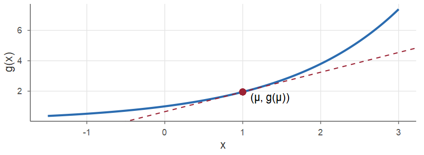
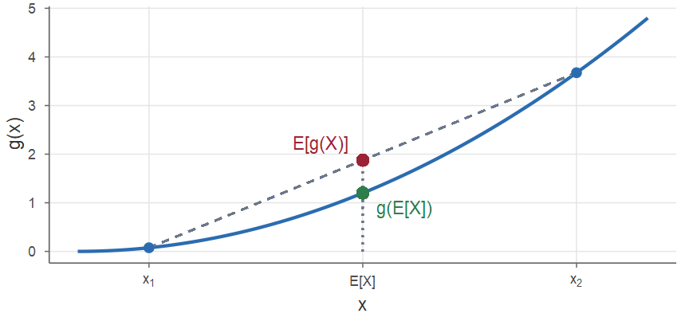
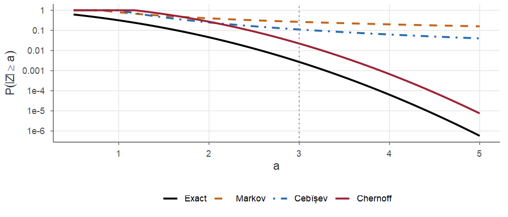
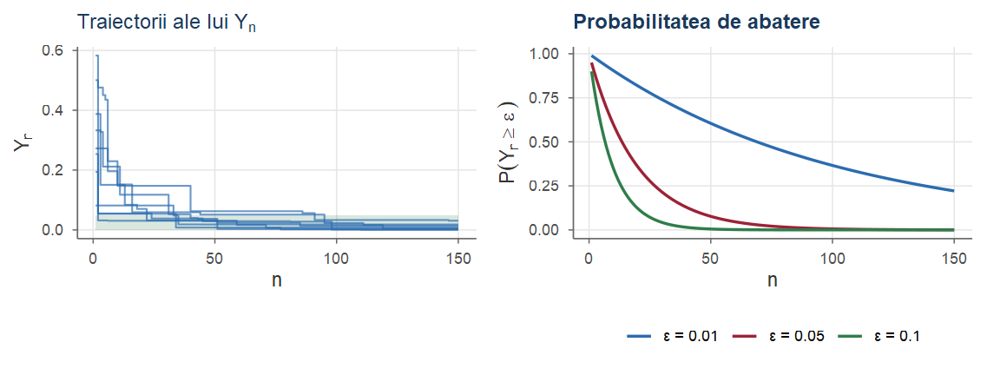
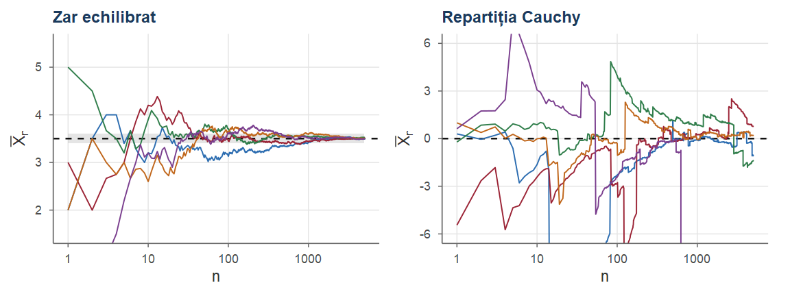
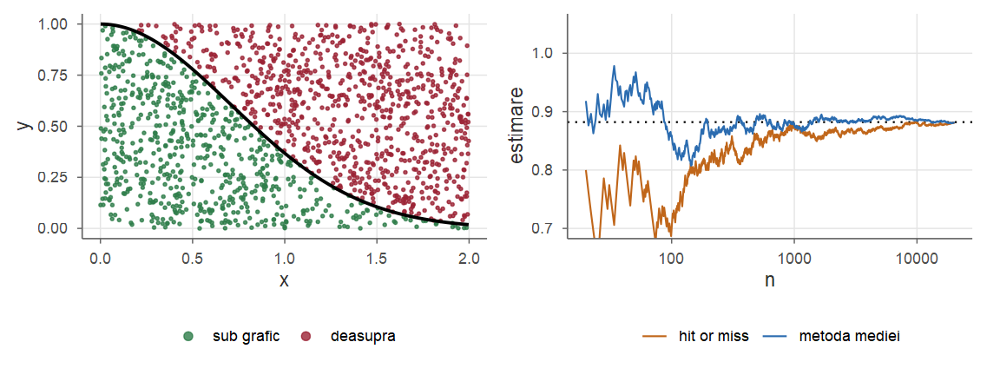
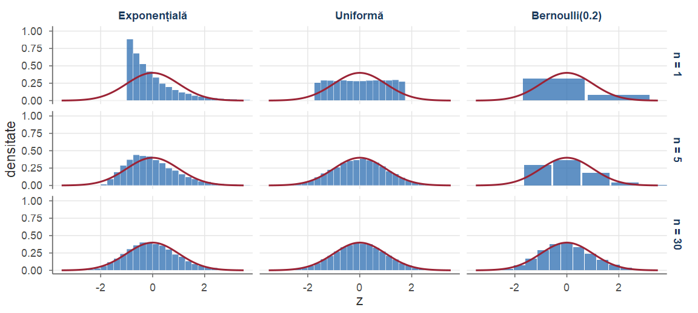
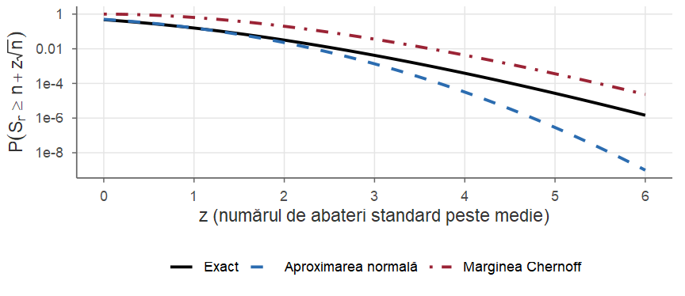
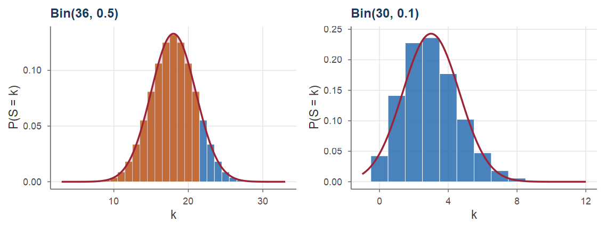

Cursul 7. Inegalități probabiliste și teoreme limită
Probabilități și Statistică · Cursul 7
Alexandru Amărioarei
Universitatea din București · Facultatea de Matematică și Informatică · 2026–2027
Planul cursului
| Partea | Conținut |
|---|---|
| I | Inegalități: Cauchy–Schwarz, Jensen, Markov, Cebîșev, Cantelli |
| II | Chernoff și Hoeffding; comparații; tipuri de convergență |
| III | Eșantion; Legea Numerelor Mari; Monte Carlo; TLC |
| IV | Aplicații ale TLC; volumul eșantionului; limitele TLC; de Moivre–Laplace; exerciții rezolvate |
Obiective. La finalul cursului studenții știu să:
- mărginească probabilități folosind media, varianța sau funcția generatoare de momente;
- distingă tipurile de convergență și să enunțe LNM și TLC;
- aproximeze probabilități pentru sume și medii cu ajutorul TLC.
Recapitulare: medii, varianțe, covarianță
Din cursurile anterioare folosim:
- liniaritatea mediei: \(\E[aX+bY+c]=a\E[X]+b\E[Y]+c\); monotonia: \(X\le Y\Rightarrow\E[X]\le\E[Y]\);
- \(\Var(X)=\E[X^2]-(\E[X])^2\), \(\ \Var(aX+b)=a^2\Var(X)\);
- \(\Var(X_1+\dots+X_n)=\sum_i\Var(X_i)+2\sum_{i<j}\Cov(X_i,X_j)\) (Propoziția 34 din Cursul 6);
- dacă \(X_i\) sunt independente: \(\E[X_1X_2]=\E[X_1]\E[X_2]\) și varianța sumei = suma varianțelor;
- \(|\rho(X,Y)|\le1\) (Teorema 36 din Cursul 6) — o vom revedea ca inegalitatea Cauchy–Schwarz;
- suma de normale independente este normală (Propoziția 43 din Cursul 6).
Recapitulare: repartiții uzuale
| Repartiție | \(\E[X]\) | \(\Var(X)\) |
|---|---|---|
| \(\Bern(p)\) / \(\Bin(n,p)\) | \(p\) / \(np\) | \(p(1-p)\) / \(np(1-p)\) |
| \(\Pois(\lambda)\) | \(\lambda\) | \(\lambda\) |
| \(\Unif(a,b)\) | \((a+b)/2\) | \((b-a)^2/12\) |
| \(\Exp(\lambda)\) / \(\GammaD(\alpha,\lambda)\) | \(1/\lambda\) / \(\alpha/\lambda\) | \(1/\lambda^2\) / \(\alpha/\lambda^2\) |
| \(\Norm(\mu,\sigma^2)\) | \(\mu\) | \(\sigma^2\) |
Standardizare: \(X\sim\Norm(\mu,\sigma^2)\Rightarrow\frac{X-\mu}{\sigma}\sim\Norm(0,1)\), \(\PP(X\le x)=\Phi\big(\frac{x-\mu}{\sigma}\big)\). Funcția generatoare de momente: \(M_X(t)=\E[e^{tX}]\).
Motivație: trei strategii
Dacă nu putem evalua exact o probabilitate sau o medie, avem trei strategii:
simularea (Monte Carlo): estimăm probabilitatea prin frecvența relativă într-un număr mare de repetiții;
mărginirea prin inegalități, care folosesc doar câteva caracteristici numerice (medie, varianță, funcția generatoare de momente);
aproximarea la limită: înlocuim repartiția exactă (complicată) cu o repartiție limită simplă, de obicei cea normală.
Azi: inegalități \(\to\) tipuri de convergență \(\to\) Legea Numerelor Mari (justifică a) \(\to\) Teorema Limită Centrală (justifică c).
Partea I — Inegalități probabiliste
Inegalitatea Cauchy–Schwarz
Teorema 1 (Inegalitatea Cauchy–Schwarz)
Pentru orice două variabile aleatoare \(X\) și \(Y\) cu \(\E[X^2]<\infty\) și \(\E[Y^2]<\infty\) avem \[ \big|\E[XY]\big|\le\sqrt{\E[X^2]\,\E[Y^2]}. \] Egalitatea are loc dacă și numai dacă există o relație liniară între \(X\) și \(Y\), adică \(\PP(X=\lambda_0 Y)=1\) pentru o constantă \(\lambda_0\) (sau \(Y=0\) a.s.).
Am întâlnit-o deja în Cursul 6: \(|\rho(X,Y)|\le1\).
Cauchy–Schwarz: demonstrație
Demonstrație. Dacă \(\E[Y^2]=0\), atunci \(Y=0\) a.s., deci \(\E[XY]=0\) și inegalitatea este evidentă. Presupunem \(\E[Y^2]>0\). Pentru orice \(\lambda\in\R\), \((X+\lambda Y)^2\ge0\), deci \[ 0\le\E\big[(X+\lambda Y)^2\big]=\lambda^2\,\E[Y^2]+2\lambda\,\E[XY]+\E[X^2],\qquad\forall\lambda\in\R. \] Un trinom de gradul doi în \(\lambda\), pozitiv pentru orice \(\lambda\), are discriminantul \(\Delta=4\,\E[XY]^2-4\,\E[X^2]\,\E[Y^2]\le 0\) — exact inegalitatea dorită.
Egalitatea înseamnă \(\Delta=0\): trinomul are o rădăcină dublă \(\lambda_0\), cu \(\E[(X+\lambda_0Y)^2]=0\); o variabilă pozitivă de medie nulă este nulă a.s., deci \(X=-\lambda_0 Y\) a.s.■
Cauchy–Schwarz: trei versiuni
Observație
Inegalitatea are mai multe „versiuni”, toate cazuri particulare ale aceleiași idei.
Dacă \((X,Y)\) ia valorile \((a_1,b_1),\dots,(a_n,b_n)\), fiecare cu probabilitatea \(1/n\): \(\big(\sum_{i=1}^n a_ib_i\big)^2\le\big(\sum_{i=1}^n a_i^2\big)\big(\sum_{i=1}^n b_i^2\big)\).
\(\langle X,Y\rangle=\E[XY]\) este un produs scalar, cu norma \(\|X\|=\sqrt{\E[X^2]}\); teorema devine \(|\langle X,Y\rangle|\le\|X\|\,\|Y\|\).
Pentru variabilele centrate \(X-\E[X]\), \(Y-\E[Y]\): \(|\Cov(X,Y)|\le\sigma_X\sigma_Y\), adică \(|\rho(X,Y)|\le 1\).
O margine inferioară pentru \(\PP(X\neq 0)\)
Exemplul 1 (O margine inferioară pentru \(\PP(X\neq 0)\))
Fie \(X\) cu \(\E[X^2]<\infty\). Deoarece \(|X|=|X|\cdot\Ind_{\{X\neq 0\}}\), aplicăm Cauchy–Schwarz lui \(|X|\) și \(\Ind_{\{X\neq0\}}\) și folosim \(\Ind_A^2=\Ind_A\), \(\E[\Ind_A]=\PP(A)\): \[ \E|X|=\E\big[|X|\,\Ind_{\{X\neq0\}}\big]\le\sqrt{\E[X^2]}\,\sqrt{\PP(X\neq 0)} \ \Longrightarrow\ \PP(X\neq0)\ge\frac{(\E|X|)^2}{\E[X^2]}. \] Pentru \(X\sim\Pois(\lambda)\): \(\E|X|=\lambda\), \(\E[X^2]=\lambda+\lambda^2\), deci \(\PP(X\neq 0)\ge \lambda/(1+\lambda)\). Pentru \(\lambda=1\): marginea este \(0.5\), valoarea exactă \(1-e^{-1}\approx 0.632\).
Funcții convexe și concave
Definiția 2 (Funcții convexe și concave)
Fie \(I\subseteq\R\) un interval. O funcție \(g:I\to\R\) se numește convexă dacă \[ g\big(tx+(1-t)y\big)\le t\,g(x)+(1-t)\,g(y),\qquad\forall\,x,y\in I,\ \forall\,t\in[0,1], \] și concavă dacă inegalitatea are loc în sens invers (\(-g\) este convexă). Geometric: orice coardă a graficului se află deasupra graficului. Dacă \(g\) este de două ori derivabilă: \(g\) convexă \(\iff g''\ge 0\); \(g\) concavă \(\iff g''\le0\).
- convexe: \(x^2\), \(|x|\), \(e^{x}\), \(1/x\) pe \((0,\infty)\); concave: \(\log x\), \(\sqrt{x}\) pe \((0,\infty)\).
Dreapta de sprijin
Proprietatea esențială a unei funcții convexe \(g\) pe care o folosim:
în orice punct \(\mu\) din interiorul lui \(I\) există o dreaptă \(y=a+bx\) care trece prin \((\mu,g(\mu))\) și rămâne sub grafic: \[ g(x)\ge a+bx,\qquad\forall x\in I. \]
Dacă \(g\) este derivabilă, aceasta este tangenta în \(\mu\): \(a+bx=g(\mu)+g'(\mu)(x-\mu)\).
Inegalitatea lui Jensen
Teorema 3 (Inegalitatea lui Jensen)
Fie \(X\) o variabilă aleatoare cu medie finită și \(g\) o funcție astfel încât \(\E|g(X)|<\infty\). Dacă \(g\) este convexă, atunci \[ \E[g(X)]\ge g\big(\E[X]\big), \] iar dacă \(g\) este concavă, atunci \(\E[g(X)]\le g\big(\E[X]\big)\).
Cum reținem sensul: pentru \(g(x)=x^2\) inegalitatea devine \(\E[X^2]\ge(\E[X])^2\), adică \(\Var(X)\ge 0\).
Jensen: demonstrație
Demonstrație. Fie \(g\) convexă și \(\mu=\E[X]\). Fie \(y=a+bx\) dreapta de sprijin (tangenta) la graficul lui \(g\) în \((\mu,g(\mu))\). Din convexitate \(g(x)\ge a+bx\) pentru orice \(x\), deci \(g(X)\ge a+bX\). Luând media (monotonă și liniară), \[ \E[g(X)]\ge\E[a+bX]=a+b\,\E[X]=a+b\mu=g(\mu)=g\big(\E[X]\big). \] Cazul concav: aplicăm rezultatul funcției convexe \(-g\).
Egalitate: \(Y=g(X)-(a+bX)\ge0\) și \(\E[Y]=0\), deci \(\PP(Y=0)=1\): \(g(X)=a+bX\) a.s., adică \(g\) coincide cu o funcție liniară pe valorile lui \(X\) (de exemplu, \(X\) constantă).■
Jensen: interpretare geometrică
\(X\) ia valorile \(x_1=0.5\) și \(x_2=3.5\), fiecare cu probabilitatea \(1/2\), și \(g(x)=0.3x^2\): \(\E[g(X)]\) este mijlocul coardei, \(g(\E[X])\) este valoarea funcției în mijlocul intervalului.

Aplicații ale inegalității lui Jensen
Exemplul 2 (Aplicații ale inegalității lui Jensen)
Aplicăm Teorema 3 pentru câteva funcții uzuale.
\(g(x)=|x|\) este convexă, deci \(\E|X|\ge|\E[X]|\).
\(g(x)=1/x\) este convexă pe \((0,\infty)\); pentru \(X>0\): \(\E[1/X]\ge 1/\E[X]\). Dacă \(X\sim\Unif(1,3)\): \[ \E[1/X]=\int_1^3\frac1x\cdot\frac12\dd x=\tfrac12\log 3\approx 0.549\ \ge\ 1/\E[X]=0.5. \]
\(g(x)=\log x\) este concavă pe \((0,\infty)\); pentru \(X>0\): \(\E[\log X]\le\log\E[X]\). Pentru \(X\sim\Unif(0,1)\): \(\E[\log X]=\int_0^1\log x\dd x=-1\le\log(1/2)\approx-0.693\).
Aplicații: inegalitatea mediilor
Exemplul 2 (Aplicații ale inegalității lui Jensen (continuare))
- Inegalitatea mediilor. Fie \(a_1,\dots,a_n>0\) și \(X\) uniformă pe \(\{a_1,\dots,a_n\}\). Din c), \[ \frac1n\sum_{i=1}^n\log a_i\le\log\Big(\frac1n\sum_{i=1}^n a_i\Big), \] iar prin exponențiere obținem \[ \sqrt[n]{a_1a_2\cdots a_n}\le\frac{a_1+a_2+\dots+a_n}{n}: \] media geometrică nu depășește media aritmetică.
Atenție: \(\E[g(X)]\neq g(\E[X])\)
Atenție!
În general \(\E[g(X)]\neq g(\E[X])\). În particular, \(\E[1/X]\neq 1/\E[X]\) și \(\E[X/Y]\neq\E[X]/\E[Y]\), chiar dacă \(X\) și \(Y\) sunt independente (vezi Exercițiul 1). Egalitatea are loc pentru funcții liniare: \(\E[aX+b]=a\E[X]+b\).
Verificare prin simulare pentru \(X\sim\Unif(1,3)\) (Exemplul 2, punctul b):
Inegalitatea lui Markov
O variabilă pozitivă nu poate lua valori mari cu probabilitate mare decât dacă are o medie mare.
Teorema 4 (Inegalitatea lui Markov)
Dacă \(X\) este o variabilă aleatoare pozitivă (\(X\ge 0\)), atunci \[ \PP(X\ge a)\le\frac{\E[X]}{a},\qquad\forall\,a>0. \]
Este punctul de plecare pentru toate inegalitățile „de coadă” care urmează.
Markov: demonstrație
Demonstrație. Fixăm \(a>0\) și definim variabila aleatoare \[ Y_a=a\,\Ind_{\{X\ge a\}}=\begin{cases}0, & X<a,\\ a, & X\ge a.\end{cases} \] Avem \(Y_a\le X\): dacă \(X<a\), atunci \(Y_a=0\le X\) (căci \(X\ge0\)), iar dacă \(X\ge a\), atunci \(Y_a=a\le X\). Aplicând media (monotonă), \[ \E[X]\ge\E[Y_a]=0\cdot\PP(Y_a=0)+a\,\PP(Y_a=a)=a\,\PP(X\ge a), \] de unde, împărțind la \(a>0\), rezultă inegalitatea.■
Markov pentru o uniformă
Exemplul 3 (Inegalitatea lui Markov pentru o uniformă)
Fie \(X\sim\Unif(0,4)\), deci \(\E[X]=2\) și \(\PP(X\ge a)\le 2/a\). Comparăm cu valorile exacte \(\PP(X\ge a)=(4-a)/4\):
| \(a\) | 1 | 2 | 4 |
|---|---|---|---|
| margine Markov \(2/a\) | 2 | 1 | 0.5 |
| valoare exactă | 0.75 | 0.5 | 0 |
Pentru \(a\le 2\) marginea este banală (orice probabilitate este \(\le 1\)), iar pentru \(a=4\) marginea \(0.5\) este departe de \(0\). Inegalitatea este utilă doar pentru \(a>\E[X]\) și este, în general, grosieră: folosește doar media.
Markov nu poate fi îmbunătățită
Observație
Totuși, inegalitatea lui Markov nu poate fi îmbunătățită fără alte informații: variabila \(X\) care ia valoarea \(a\) cu probabilitatea \(m/a\) și valoarea \(0\) în rest (\(0<m\le a\)) are \[ \E[X]=m\qquad\text{și}\qquad\PP(X\ge a)=\frac ma=\frac{\E[X]}{a}. \] Aplicată variabilei \(|X|^r\), inegalitatea dă forma generală \[ \PP(|X|\ge a)\le\frac{\E|X|^r}{a^r},\qquad r>0. \]
Ideea pentru inegalitățile următoare: aplicăm Markov unei funcții crescătoare a lui \(|X-\mu|\) (\(x^2\), \(e^{tx}\)).
Inegalitatea lui Cebîșev
Dacă, pe lângă medie, cunoaștem și varianța, controlăm abaterile de la medie în ambele sensuri.
Teorema 5 (Inegalitatea lui Cebîșev)
Dacă \(X\) este o variabilă aleatoare de medie \(\mu\) și varianță \(\sigma^2<\infty\), atunci \[ \PP\big(|X-\mu|\ge a\big)\le\frac{\sigma^2}{a^2},\qquad\forall\,a>0. \]
Cebîșev: demonstrație și forma cu \(k\sigma\)
Demonstrație. Fie \(Y=(X-\mu)^2\ge 0\). Aplicând inegalitatea lui Markov variabilei \(Y\) și constantei \(a^2>0\), \[ \PP\big(Y\ge a^2\big)\le\frac{\E[Y]}{a^2}=\frac{\E\big[(X-\E[X])^2\big]}{a^2}=\frac{\Var(X)}{a^2}=\frac{\sigma^2}{a^2}. \] Cum \(\{Y\ge a^2\}=\{|X-\mu|\ge a\}\), obținem inegalitatea dorită.■
Luând \(a=k\sigma\) cu \(k>0\) obținem forma echivalentă \[ \PP\big(|X-\mu|\ge k\sigma\big)\le\frac{1}{k^2}\qquad\text{sau}\qquad \PP\big(|X-\mu|<k\sigma\big)\ge 1-\frac{1}{k^2}. \]
Regula celor \(k\) abateri standard
Exemplul 4 (Regula celor \(k\) abateri standard)
Pentru orice variabilă cu varianță finită, cel puțin \(1-1/4=75\%\) din masa de probabilitate se află la cel mult \(2\sigma\) de medie, iar cel puțin \(1-1/9\approx 88.9\%\) la cel mult \(3\sigma\). Pentru repartiția normală proporțiile sunt mult mai mari: \(95.45\%\), respectiv \(99.73\%\) (regula „\(3\sigma\)”). Cebîșev este valabilă pentru orice repartiție, deci trebuie să acopere și cazurile cele mai defavorabile.
O margine superioară pentru varianță
Când varianța nu este cunoscută, dar \(X\) este mărginită:
Propoziția 6 (O margine superioară pentru varianță)
Dacă \(X\) ia valori în intervalul \([a,b]\), atunci \[ \Var(X)\le\frac{(b-a)^2}{4} \qquad\text{și, prin urmare,}\qquad \PP\big(|X-\mu|\ge c\big)\le\frac{(b-a)^2}{4c^2},\quad\forall\,c>0. \]
Margine pentru varianță: demonstrație
Demonstrație. Pentru orice \(\gamma\in\R\), \(\E[(X-\gamma)^2]=\E[X^2]-2\gamma\,\E[X]+\gamma^2\) este un trinom în \(\gamma\), minim în \(\gamma=\E[X]\). Deci media minimizează abaterea pătratică medie: \[ \sigma^2=\E\big[(X-\E[X])^2\big]\le\E\big[(X-\gamma)^2\big],\qquad\forall\,\gamma\in\R. \] Alegem \(\gamma=\frac{a+b}{2}\). Un calcul direct: \(\big(x-\frac{a+b}{2}\big)^2=(x-a)(x-b)+\frac{(b-a)^2}{4}\), deci \[ \sigma^2\le\E\Big[\Big(X-\frac{a+b}{2}\Big)^2\Big]=\E\big[(X-a)(X-b)\big]+\frac{(b-a)^2}{4}\le\frac{(b-a)^2}{4}, \] căci \(X\in[a,b]\Rightarrow(X-a)(X-b)\le 0\). A doua afirmație rezultă din Cebîșev.■
Marginea este atinsă
Observație
Marginea este atinsă: dacă \(X\) ia valorile \(a\) și \(b\) cu probabilitățile \(1/2\), atunci \[ \E[X]=\frac{a+b}2,\qquad\Var(X)=\frac{(b-a)^2}{4}. \] Caz particular important: pentru \(X\sim\Bern(p)\) (valori în \([0,1]\)), \[ \Var(X)=p(1-p)\le \frac14, \] cu egalitate pentru \(p=1/2\). O vom folosi pentru sondajele de opinie, unde \(p\) este necunoscut.
Inegalitatea unilaterală a lui Cantelli
Pentru abateri într-un singur sens obținem o margine mai bună aplicând Markov după o translație convenabilă.
Propoziția 7 (Inegalitatea lui Cantelli)
Dacă \(X\) are media \(\mu\) și varianța \(\sigma^2<\infty\), atunci \[ \PP(X-\mu\ge a)\le\frac{\sigma^2}{\sigma^2+a^2},\qquad\forall\,a>0. \]
Cantelli: demonstrație
Demonstrație. Înlocuind \(X\) cu \(X-\mu\), putem presupune \(\mu=0\), deci \(\E[X^2]=\sigma^2\). Fie \(t>0\). Deoarece \(a+t>0\), \[ \{X\ge a\}=\{X+t\ge a+t\}\subseteq\{(X+t)^2\ge(a+t)^2\}. \] Din Markov aplicat variabilei pozitive \((X+t)^2\): \[ \PP(X\ge a)\le\frac{\E[(X+t)^2]}{(a+t)^2}=\frac{\E[X^2]+2t\E[X]+t^2}{(a+t)^2}=\frac{\sigma^2+t^2}{(a+t)^2}=:h(t),\quad\forall\,t>0. \] Marginea este valabilă pentru orice \(t>0\), deci o putem alege pe cea mai mică.■
Cantelli: demonstrație (continuare)
Demonstrație. Minimizăm \(h(t)=\dfrac{\sigma^2+t^2}{(a+t)^2}\) pe \((0,\infty)\): \[ h'(t)=\frac{2t(a+t)^2-2(a+t)(\sigma^2+t^2)}{(a+t)^4}=0\iff t(a+t)=\sigma^2+t^2\iff t=\frac{\sigma^2}{a}. \] Înlocuind, \[ h\Big(\frac{\sigma^2}{a}\Big)=\frac{\sigma^2+\sigma^4/a^2}{(a+\sigma^2/a)^2}=\frac{\sigma^2(a^2+\sigma^2)/a^2}{(a^2+\sigma^2)^2/a^2}=\frac{\sigma^2}{\sigma^2+a^2}. \]■
Cantelli versus Cebîșev
Marginea lui Cantelli este întotdeauna mai mică decât cea a lui Cebîșev: \[ \frac{\sigma^2}{\sigma^2+a^2}<\frac{\sigma^2}{a^2}, \] și este netrivială pentru orice \(a>0\). De exemplu, pentru \(a=\sigma\):
- Cantelli: \(\PP(X-\mu\ge\sigma)\le\frac12\);
- Cebîșev: \(\PP(X-\mu\ge\sigma)\le\PP(|X-\mu|\ge\sigma)\le1\) (banală).
Partea II — Chernoff, comparații și tipuri de convergență
Inegalitatea lui Chernoff
Ideea lui Cebîșev (Markov aplicat unei funcții crescătoare a lui \(|X-\mu|\)), dusă mai departe cu funcția exponențială:
Teorema 8 (Inegalitatea lui Chernoff)
Fie \(X\) o variabilă aleatoare și \(a\in\R\). Pentru orice \(t>0\) pentru care \(M_X(t)=\E[e^{tX}]<\infty\), \[ \PP(X\ge a)\le\frac{\E[e^{tX}]}{e^{ta}}=e^{-ta}M_X(t), \qquad\text{deci}\qquad \PP(X\ge a)\le\inf_{t>0}e^{-ta}M_X(t). \]
Marginile obținute descresc exponențial în \(a\).
Chernoff: demonstrație
Demonstrație. Pentru \(t>0\), funcția \(g(x)=e^{tx}\) este strict crescătoare (bijectivă), deci \[ \{X\ge a\}=\{e^{tX}\ge e^{ta}\}. \] Variabila \(e^{tX}\) este pozitivă, iar inegalitatea lui Markov dă \[ \PP(X\ge a)=\PP\big(e^{tX}\ge e^{ta}\big)\le\frac{\E[e^{tX}]}{e^{ta}}. \] Cum inegalitatea are loc pentru orice \(t>0\), putem trece la infimum.■
Rețeta: scriem \(\PP(X\ge a)\le\exp\{\varphi(t)\}\) cu \(\varphi(t)=\log M_X(t)-ta\) și minimizăm \(\varphi\) (\(\varphi'(t)=0\)).
Chernoff pentru binomială: enunț
Exemplul 5 (Marginea Chernoff pentru binomială)
Aruncăm de \(100\) de ori o monedă echilibrată; \(X\sim\Bin(100,0.5)\) este numărul de steme. Mărginim \(\PP(X\ge 75)\). Avem \(\E[X]=50\) și \(\Var(X)=25\).
- Markov: \(\PP(X\ge75)\le 50/75\approx 0.667\).
- Cebîșev: \(\PP(X\ge 75)\le\PP(|X-50|\ge25)\le 25/625=0.04\).
- Cantelli: \(\PP(X-50\ge25)\le 25/(25+625)\approx0.0385\).
Chernoff pentru binomială: calcul
Exemplul 5 (Marginea Chernoff pentru binomială (continuare))
- Chernoff: \(M_X(t)=\big(\tfrac{1+e^t}{2}\big)^{100}\), deci \(\PP(X\ge 75)\le\exp\{\varphi(t)\}\) cu \[ \varphi(t)=-75t+100\log\frac{1+e^t}{2},\qquad \varphi'(t)=-75+100\,\frac{e^t}{1+e^t}=0\iff e^{t}=3, \] \[ \PP(X\ge 75)\le 3^{-75}\Big(\frac{1+3}{2}\Big)^{100}=\frac{2^{100}}{3^{75}}\approx 2.08\cdot10^{-6}. \]
Chernoff pentru binomială: comparație
Valoarea exactă este 1 - pbinom(74, 100, 0.5) \(\approx 2.82\cdot 10^{-7}\).
#> Markov Cebisev Cantelli Chernoff exact
#> 6.67e-01 4.00e-02 3.85e-02 2.08e-06 2.82e-07- Marginea Chernoff are ordinul de mărime corect (de \(\approx7\) ori mai mare decât valoarea exactă).
- Markov și Cebîșev sunt mai slabe cu 4–6 ordine de mărime: folosesc prea puțină informație.
Studiu de caz: \(\PP(|Z|>3)\), \(Z\sim\Norm(0,1)\)
Exemplul 6 (Mărginirea lui \(\PP(|Z|>3)\) pentru \(Z\sim\Norm(0,1)\))
Valoarea exactă: \(\PP(|Z|>3)=2\big(1-\Phi(3)\big)\approx 0.0027\).
Markov (aplicat lui \(|Z|\)). Calculăm \[ \begin{aligned} \E|Z|&=\int_{\R}|z|\frac{1}{\sqrt{2\pi}}e^{-z^2/2}\dd z=\frac{2}{\sqrt{2\pi}}\int_0^\infty z\,e^{-z^2/2}\dd z\\ &=\frac{2}{\sqrt{2\pi}}\Big(-e^{-z^2/2}\Big)\Big|_0^\infty=\sqrt{\frac{2}{\pi}}, \end{aligned} \] deci \(\PP(|Z|>3)\le\frac{\E|Z|}{3}=\frac13\sqrt{\frac2\pi}\approx 0.266\).
Cebîșev. \(\mu=0\), \(\sigma=1\): \(\PP(|Z-0|\ge 3\cdot 1)\le 1/9\approx 0.111\).
Studiu de caz: marginea Chernoff
Exemplul 6 (Mărginirea lui \(\PP(|Z|>3)\) (continuare))
- Chernoff. Din simetrie, \(\PP(|Z|>3)=2\,\PP(Z>3)\le 2\,e^{-3t}\,\E[e^{tZ}]\). Completând pătratul, \(-\frac{z^2}{2}+tz=-\frac{(z-t)^2}{2}+\frac{t^2}{2}\), deci \[ \E[e^{tZ}]=\int_{\R}\frac{1}{\sqrt{2\pi}}e^{-z^2/2+tz}\dd z=e^{t^2/2}\underbrace{\int_{\R}\frac{1}{\sqrt{2\pi}}e^{-(z-t)^2/2}\dd z}_{=1\ (\text{densitatea }\Norm(t,1))}=e^{t^2/2}. \] Rezultă \(\PP(|Z|>3)\le 2e^{t^2/2-3t}\), \(t>0\); exponentul este minim pentru \(t=3\): \[ \PP(|Z|>3)\le 2e^{-9/2}\approx 0.022. \]
Comparație pentru un prag oarecare \(a\)
Concluzie pentru \(a=3\): Markov depășește valoarea exactă de \(\approx100\) ori, Cebîșev de \(\approx40\) ori, Chernoff de \(\approx8\) ori. Același calcul, pentru \(a>0\): marginile \(\sqrt{2/\pi}/a\) (Markov), \(1/a^2\) (Cebîșev), \(2e^{-a^2/2}\) (Chernoff), față de valoarea exactă \(2(1-\Phi(a))\).
| $a$ | Exact | Markov | Cebîșev | Chernoff |
|---|---|---|---|---|
| 1 | 0.317 | 0.798 | 1 | 1 |
| 2 | 0.0455 | 0.399 | 0.25 | 0.271 |
| 3 | 0.0027 | 0.266 | 0.111 | 0.0222 |
| 4 | 6.33e-05 | 0.199 | 0.0625 | 0.000671 |
Marginile mai mari decât 1 au fost înlocuite cu 1. Pentru \(a=1\) Cebîșev și Chernoff sunt banale; pentru \(a\ge3\) Chernoff câștigă detașat.
Comparație: grafic pe scară logaritmică

Markov descrește ca \(1/a\), Cebîșev ca \(1/a^2\), Chernoff (și valoarea exactă) ca \(e^{-a^2/2}\).
Cebîșev nu poate fi îmbunătățită
Observație
Cebîșev nu este strânsă pentru repartiția normală, dar nu poate fi îmbunătățită în clasa tuturor repartițiilor cu medie și varianță date. Pentru \(k>1\), fie \[ X\sim\begin{pmatrix} -k & 0 & k\\ \frac{1}{2k^2} & 1-\frac1{k^2} & \frac1{2k^2}\end{pmatrix}. \] Atunci \(\E[X]=0\), \(\Var(X)=\E[X^2]=k^2\cdot\frac1{k^2}=1\) și \(\PP(|X|\ge k)=\frac1{k^2}\): egalitate în inegalitatea lui Cebîșev. Marginile mai bune (de tip Chernoff) necesită mai multă informație despre repartiție.
Inegalitatea lui Hoeffding
Chernoff cere funcția generatoare de momente. În practică nu cunoaștem repartiția, dar știm adesea că variabilele sunt mărginite (un click într-un test A/B, verdictul unui clasificator).
Teorema 9 (Inegalitatea lui Hoeffding)
Fie \(X_1,\dots,X_n\) variabile aleatoare independente, cu valori în \([a,b]\) și cu aceeași medie \(\mu\). Atunci, pentru orice \(\varepsilon>0\), \[ \PP\big(\Xbar-\mu\ge\varepsilon\big)\le\exp\Big\{-\frac{2n\varepsilon^2}{(b-a)^2}\Big\} \quad\text{și}\quad \PP\big(|\Xbar-\mu|\ge\varepsilon\big)\le2\exp\Big\{-\frac{2n\varepsilon^2}{(b-a)^2}\Big\}. \]
Cebîșev dă doar \(\frac{(b-a)^2}{4n\varepsilon^2}\) (scade ca \(1/n\)); marginea lui Hoeffding scade exponențial în \(n\).
Hoeffding: ideea demonstrației
Ideea demonstrației. Aplicăm Chernoff sumei \(\sum_{i}(X_i-\mu)=n(\Xbar-\mu)\) și folosim independența: pentru \(t>0\), \[ \PP\big(\Xbar-\mu\ge\varepsilon\big)\le e^{-tn\varepsilon}\prod_{i=1}^n\E\big[e^{t(X_i-\mu)}\big]\le\exp\Big\{-tn\varepsilon+\frac{nt^2(b-a)^2}{8}\Big\}, \] unde am folosit lema lui Hoeffding (o admitem): dacă \(\E[Y]=0\) și \(Y\) ia valori într-un interval de lungime \(b-a\), atunci \(\E[e^{tY}]\le e^{t^2(b-a)^2/8}\).
Exponentul este minim pentru \(t=4\varepsilon/(b-a)^2\), unde ia valoarea \(-2n\varepsilon^2/(b-a)^2\).■
Aceeași margine pentru \(-X_i\) și inegalitatea lui Boole (Propoziția 17 din Cursul 1) dau forma bilaterală.
Hoeffding: eroarea unui clasificator
Exemplul 7 (Eroarea unui clasificator pe un set de test)
Un clasificator greșește cu probabilitatea necunoscută \(p\); îl evaluăm pe \(n=1000\) de exemple de test independente. \(X_i\sim\Bern(p)\) (\(X_i=1\): exemplul \(i\) este clasificat greșit), \(\Xbar\) este proporția de erori observată, iar \(b-a=1\): \[ \PP\big(|\Xbar-p|\ge0.05\big)\le2e^{-2\cdot1000\cdot0.05^2}=2e^{-5}\approx0.0135\qquad(\text{Cebîșev: }0.1). \] Citită invers: din \(2e^{-2n\varepsilon^2}=\delta\) obținem \(\varepsilon=\sqrt{\log(2/\delta)/(2n)}\); pentru \(n=1000\) și \(\delta=0.05\), \(\varepsilon\approx0.043\).
Cu probabilitate de cel puțin \(95\%\), eroarea măsurată diferă de cea reală cu mai puțin de \(4.3\) puncte procentuale, oricare ar fi \(p\).
Hoeffding: comparație cu valoarea exactă
Cum \(n\Xbar\sim\Bin(n,p)\), putem calcula exact \(\PP(|\Xbar-p|\ge\varepsilon)\):
#> p exact Cebisev Hoeffding
#> 1 0.1 4.5e-07 0.1 0.0135
#> 2 0.3 6.3e-04 0.1 0.0135
#> 3 0.5 1.7e-03 0.1 0.0135Probabilitatea exactă depinde de \(p\) (necunoscut); marginea lui Hoeffding o acoperă în toate cazurile și este de peste șapte ori mai mică decât cea a lui Cebîșev.
Tipuri de convergență: de ce mai multe?
- Teoremele limită descriu comportamentul unor șiruri de variabile aleatoare, de exemplu \(\Xbar=(X_1+\dots+X_n)/n\).
- Variabilele aleatoare sunt funcții pe \(\Omega\): pentru șiruri de funcții există mai multe noțiuni naturale de convergență.
- În cele ce urmează, \((X_n)_{n\ge1}\) și \(X\) sunt definite pe același câmp de probabilitate \((\Omega,\F,\PP)\).
Vom defini patru tipuri: aproape sigură, în probabilitate, în repartiție și în medie pătratică, apoi vom vedea relațiile dintre ele.
Convergența aproape sigură
Definiția 10 (Convergența aproape sigură)
Spunem că șirul \((X_n)_n\) converge aproape sigur la \(X\) și notăm \(X_n\asto X\) dacă \[ \PP\Big(\lim_{n\to\infty}X_n=X\Big)=1, \] adică evenimentul \(\{\omega\in\Omega\mid \lim_{n}X_n(\omega)=X(\omega)\}\) are probabilitatea \(1\).
Altfel spus: convergență punctuală în toate punctele din \(\Omega\), cu excepția unei mulțimi de probabilitate zero.
Convergența în probabilitate
Definiția 11 (Convergența în probabilitate)
Spunem că șirul \((X_n)_n\) converge în probabilitate la \(X\) și notăm \(X_n\pto X\) dacă, pentru orice \(\varepsilon>0\), \[ \lim_{n\to\infty}\PP\big(|X_n-X|\ge\varepsilon\big)=0 \qquad\Big(\text{echivalent, } \lim_{n\to\infty}\PP\big(|X_n-X|<\varepsilon\big)=1\Big). \]
Explicit: pentru orice \(\varepsilon>0\) și orice \(\delta>0\) există \(n_0\) astfel încât \[ \PP\big(|X_n-X|\ge\varepsilon\big)\le\delta,\qquad\forall\,n\ge n_0. \]
Interpretare: acuratețe și încredere
În definiția convergenței în probabilitate:
- \(\varepsilon\) = nivelul de acuratețe (precizia);
- \(1-\delta\) = nivelul de încredere.
Citire: pentru orice nivel de acuratețe și de încredere dat, \(X_n\) va fi egal cu \(X\), în limitele acestei acurateți și cu acest nivel de încredere, dacă \(n\) este suficient de mare.
Exact acest limbaj îl vom folosi la sondaje și la intervalele de încredere: „cu încredere \(95\%\), eroarea este sub \(3\%\)”.
Minimul a \(n\) uniforme converge la 0
Exemplul 8 (Minimul a \(n\) uniforme converge la 0)
Fie \((X_n)_n\) independente, \(\Unif(0,1)\), și \(Y_n=\min\{X_1,\dots,X_n\}\). Arătăm că \(Y_n\pto 0\).
Fie \(\varepsilon\in(0,1)\) (pentru \(\varepsilon\ge 1\) probabilitatea este nulă). Cum \(Y_n\ge 0\), \[ \begin{aligned} \PP\big(|Y_n-0|\ge\varepsilon\big)&=\PP(Y_n\ge\varepsilon)=\PP(X_1\ge\varepsilon,\dots,X_n\ge\varepsilon)\\ &\overset{\text{indep.}}{=}\PP(X_1\ge\varepsilon)\cdots\PP(X_n\ge\varepsilon)=(1-\varepsilon)^n\xrightarrow[n\to\infty]{}0, \end{aligned} \] deoarece \(0\le 1-\varepsilon<1\). Deci \(Y_n\pto 0\). (Șirul \(Y_n\) este descrescător, deci are loc chiar convergența aproape sigură.)
Minimul a \(n\) uniforme: simulare

Stânga: 8 traiectorii și banda \([0,\varepsilon]\), \(\varepsilon=0.05\). Dreapta: \(\PP(Y_n\ge\varepsilon)=(1-\varepsilon)^n\).
Convergența în repartiție
Pentru TLC avem nevoie de o noțiune mai slabă, care se referă doar la repartițiile variabilelor \(X_n\), nu și la valorile lor.
Definiția 12 (Convergența în repartiție)
Spunem că șirul \((X_n)_n\) converge în repartiție (sau în distribuție, în lege) la \(X\) și notăm \(X_n\dto X\) dacă \[ \lim_{n\to\infty}F_{X_n}(x)=F_X(x)\qquad\text{în orice punct } x \text{ în care } F_X \text{ este continuă}. \]
Exemplu cunoscut (Cursul 3): \(X_n\sim\Bin(n,\lambda/n)\ \dto\ X\sim\Pois(\lambda)\).
Convergența în medie pătratică
Definiția 13 (Convergența în medie pătratică)
Spunem că șirul \((X_n)_n\) converge în medie pătratică (sau în \(L^2\)) la \(X\) și notăm \(X_n\Lto X\) dacă \(\E[X_n^2]<\infty\) și \[ \lim_{n\to\infty}\E\big[(X_n-X)^2\big]=0. \]
Exemplu: dacă \(X_i\) sunt i.i.d. cu media \(\mu\) și varianța \(\sigma^2\), atunci \[ \E\big[(\Xbar-\mu)^2\big]=\Var(\Xbar)=\frac{\sigma^2}{n}\to0,\qquad\text{deci}\qquad \Xbar\Lto\mu. \]
Minimul rescalat: convergență în repartiție
Exemplul 9 (Minimul rescalat converge în repartiție la o exponențială)
Continuăm Exemplul 8. Știm că \(Y_n\to0\); pentru a vedea „cât de repede”, considerăm \(nY_n\). Pentru \(0\le x\le n\), \[ \PP(nY_n>x)=\PP\Big(Y_n>\frac xn\Big)=\Big(1-\frac xn\Big)^n\xrightarrow[n\to\infty]{}e^{-x}, \] deci \(F_{nY_n}(x)\to 1-e^{-x}\) pentru orice \(x\ge 0\) (iar pentru \(x<0\) ambele funcții sunt nule).
Așadar \(nY_n\dto X\), unde \(X\sim\Exp(1)\): minimul a \(n\) uniforme este de ordinul \(1/n\).
Relații între tipurile de convergență
Teorema 14 (Relații între tipurile de convergență)
Fie \((X_n)_n\) și \(X\) variabile aleatoare definite pe același câmp de probabilitate.
Dacă \(X_n\asto X\), atunci \(X_n\pto X\).
Dacă \(X_n\Lto X\), atunci \(X_n\pto X\).
Dacă \(X_n\pto X\), atunci \(X_n\dto X\).
Dacă \(X_n\dto c\), unde \(c\) este o constantă, atunci \(X_n\pto c\).
Relații: demonstrația pentru (i) și (ii)
Demonstrație.
Necesită instrumente de teoria măsurii; o admitem fără demonstrație (Blitzstein and Hwang 2019, cap. 10).
Aplicăm inegalitatea lui Markov variabilei pozitive \((X_n-X)^2\): \[ \PP(|X_n-X|\ge\varepsilon)=\PP\big((X_n-X)^2\ge\varepsilon^2\big)\le\frac{\E[(X_n-X)^2]}{\varepsilon^2}\xrightarrow[n\to\infty]{} 0. \]
■
Aceeași idee ca la Cebîșev: o margine pentru media pătratului dă o margine pentru probabilitatea de abatere.
Relații: demonstrația pentru (iii)
Demonstrație.
- Fie \(x\) un punct de continuitate al lui \(F_X\) și \(\varepsilon>0\). Dacă \(X_n\le x\), atunci fie \(X\le x+\varepsilon\), fie \(|X_n-X|\ge\varepsilon\); deci \[ F_{X_n}(x)\le F_X(x+\varepsilon)+\PP(|X_n-X|\ge\varepsilon). \] Analog (schimbând rolurile), \(F_X(x-\varepsilon)\le F_{X_n}(x)+\PP(|X_n-X|\ge\varepsilon)\). Trecând la limită după \(n\), \[ F_X(x-\varepsilon)\le\liminf_n F_{X_n}(x)\le\limsup_n F_{X_n}(x)\le F_X(x+\varepsilon), \] iar pentru \(\varepsilon\to0\) continuitatea lui \(F_X\) în \(x\) dă \(F_{X_n}(x)\to F_X(x)\).
■
Relații: demonstrația pentru (iv)
Demonstrație.
- Funcția de repartiție a constantei \(c\) este \(F(x)=\Ind_{\{x\ge c\}}\), continuă în orice \(x\neq c\). Pentru \(\varepsilon>0\), \[ \begin{aligned} \PP(|X_n-c|\ge\varepsilon)&=\PP(X_n\le c-\varepsilon)+\PP(X_n\ge c+\varepsilon)\\ &\le F_{X_n}(c-\varepsilon)+1-F_{X_n}(c+\varepsilon/2)\\ &\xrightarrow[n\to\infty]{} 0+1-1=0, \end{aligned} \] deoarece \(c-\varepsilon\) și \(c+\varepsilon/2\) sunt puncte de continuitate ale lui \(F\), cu \(F(c-\varepsilon)=0\) și \(F(c+\varepsilon/2)=1\).
■
Diagrama implicațiilor

Convergența în repartiție este cea mai slabă; în general, reciprocele sunt false.
Reciprocele sunt false
Observație
Reciprocele implicațiilor (i)–(iii) sunt, în general, false.
În repartiție \(\not\Rightarrow\) în probabilitate: fie \(X\sim\Norm(0,1)\) și \(X_n=-X\) pentru orice \(n\). Cum \(-X\sim\Norm(0,1)\), \(F_{X_n}=F_X\), deci \(X_n\dto X\); dar \(|X_n-X|=2|X|\), iar \(\PP(2|X|\ge\varepsilon)>0\) nu depinde de \(n\).
În probabilitate \(\not\Rightarrow\) în medie pătratică: vezi Exercițiul 4.
În probabilitate \(\not\Rightarrow\) aproape sigur: șirul de indicatori ai unor intervale tot mai mici care „baleiază” repetat \([0,1]\): probabilitatea de abatere tinde la \(0\), dar în fiecare punct șirul ia valoarea \(1\) de o infinitate de ori.
Convergență și funcții continue
Propoziția 15 (Convergență și funcții continue)
Dacă \(X_n\pto a\), unde \(a\) este o constantă, și \(g\) este continuă în \(a\), atunci \(g(X_n)\pto g(a)\). Mai general, dacă \(X_n\pto a\) și \(Y_n\pto b\), atunci \(X_n+Y_n\pto a+b\), \(X_nY_n\pto ab\) și, dacă \(b\neq0\), \(X_n/Y_n\pto a/b\).
Demonstrație. Fie \(\varepsilon>0\). Din continuitate, există \(\eta>0\) astfel încât \(|x-a|<\eta\Rightarrow|g(x)-g(a)|<\varepsilon\). Deci \[ \{|g(X_n)-g(a)|\ge\varepsilon\}\subseteq\{|X_n-a|\ge\eta\}\ \Rightarrow\ \PP(|g(X_n)-g(a)|\ge\varepsilon)\le\PP(|X_n-a|\ge\eta)\to0. \] Celelalte afirmații: argument similar pentru \((x,y)\mapsto x+y,\ xy,\ x/y\).■
Partea III — Legea Numerelor Mari și Teorema Limită Centrală
Eșantion
Teoremele limită se formulează pentru medii de variabile i.i.d. — modelul matematic al măsurătorilor repetate.
Definiția 16 (Eșantion)
Numim eșantion de volum \(n\) din populația \(Q\) (o repartiție pe \(\R\)) un șir de variabile aleatoare \(X_1,\dots,X_n\) independente și identic repartizate (i.i.d.), cu repartiția comună \(Q\) (\(\PP\circ X_i^{-1}=Q\) pentru orice \(i\)). Variabila aleatoare \[ \Xbar=\frac{X_1+X_2+\dots+X_n}{n} \] se numește media eșantionului (media empirică, media de selecție).
Valorile observate \(x_1,\dots,x_n\) = realizarea eșantionului; \(\xbar\) este un număr, \(\Xbar\) o variabilă aleatoare.
Media și varianța mediei eșantionului
Propoziția 17 (Media și varianța mediei eșantionului)
Dacă \(X_1,\dots,X_n\) sunt i.i.d. de medie \(\mu\) și varianță \(\sigma^2<\infty\), atunci \[ \E[\Xbar]=\mu\qquad\text{și}\qquad\Var(\Xbar)=\frac{\sigma^2}{n}. \]
Demonstrație. Din liniaritatea mediei, \(\E[\Xbar]=\frac1n\big(\E[X_1]+\dots+\E[X_n]\big)=\frac1n\cdot n\mu=\mu\). Din independență (varianța sumei = suma varianțelor), \[ \Var(\Xbar)=\frac{1}{n^2}\Var(X_1+\dots+X_n)\overset{\text{indep.}}{=}\frac{1}{n^2}\big(\Var(X_1)+\dots+\Var(X_n)\big)=\frac{\sigma^2}{n}. \]■
Eroarea standard
Observație
Abaterea standard a mediei eșantionului, \[ \sigma_{\Xbar}=\frac{\sigma}{\sqrt n}, \] se numește eroare standard. Ea scade ca \(1/\sqrt n\): pentru a înjumătăți eroarea standard trebuie să mărim de patru ori volumul eșantionului.
Eroarea standard: simulare
Pentru \(X_i\sim\Unif(0,1)\) (\(\sigma^2=1/12\)) simulăm câte \(10\,000\) de medii \(\Xbar\) pentru \(n=4,16,64\) și comparăm abaterea lor standard cu \(\sigma/\sqrt n\):
#> [,1] [,2] [,3]
#> n 4.0000 16.0000 64.0000
#> sd_sim 0.1428 0.0714 0.0360
#> teoretic 0.1443 0.0722 0.0361Când \(n\) se înmulțește cu 4, eroarea standard se înjumătățește.
Legea Numerelor Mari (forma slabă)
Cum \(\E[\Xbar]=\mu\) și \(\Var(\Xbar)=\sigma^2/n\to0\), repartiția lui \(\Xbar\) se concentrează în jurul lui \(\mu\); Cebîșev transformă observația în teoremă.
Teorema 18 (Legea Numerelor Mari, forma slabă)
Fie \((X_n)_{n\ge1}\) un șir de variabile aleatoare i.i.d. cu media \(\mu=\E[X_1]\) finită (și varianța \(\sigma^2<\infty\)). Atunci \[ \Xbar=\frac{X_1+\dots+X_n}{n}\pto\mu, \qquad\text{adică}\qquad \lim_{n\to\infty}\PP\big(|\Xbar-\mu|\ge\varepsilon\big)=0,\quad\forall\,\varepsilon>0. \]
LNM slabă: demonstrație
Demonstrație. Fie \(\varepsilon>0\). Din inegalitatea lui Cebîșev aplicată lui \(\Xbar\) și din Propoziția 17, \[ \PP\big(|\Xbar-\mu|\ge\varepsilon\big)\le\frac{\Var(\Xbar)}{\varepsilon^2}=\frac{\sigma^2}{n\varepsilon^2}\xrightarrow[n\to\infty]{}0. \]■
Observație
Demonstrația dă și o margine explicită \(\PP(|\Xbar-\mu|\ge\varepsilon)\le\sigma^2/(n\varepsilon^2)\), utilă pentru a determina volume de eșantion. Echivalent, \(\PP\big(\Xbar\in[\mu-\varepsilon,\mu+\varepsilon]\big)\to1\). Ipoteza \(\sigma^2<\infty\) este folosită doar în demonstrație: teorema rămâne adevărată dacă media este finită (teorema lui Hincin).
Legea Numerelor Mari (forma tare)
Forma tare: pentru aproape orice realizare \(\omega\), șirul numeric \(\Xbar(\omega)\) converge la \(\mu\).
Teorema 19 (Legea Numerelor Mari, forma tare)
Fie \((X_n)_{n\ge1}\) un șir de variabile aleatoare i.i.d. cu \(\E|X_1|<\infty\) și \(\mu=\E[X_1]\). Atunci \[ \Xbar\asto\mu, \] adică mulțimea \(\Omega_0=\{\omega\in\Omega\mid \Xbar(\omega)\to\mu\}\) are \(\PP(\Omega_0)=1\).
- Demonstrația (Kolmogorov) depășește nivelul cursului (Ross 2014, cap. 8).
- Din Teorema 14 (i), forma tare implică forma slabă.
LNM: traiectorii ale mediilor curente

Stânga: zar, \(\mu=3.5\) (banda \(\mu\pm0.1\)). Dreapta: Cauchy — nu are medie, LNM nu se aplică.
LNM nu înseamnă „compensare”
Atenție!
Legea Numerelor Mari nu spune că abaterile se „compensează”. Dacă la o monedă echilibrată au apărut de multe ori la rând steme, probabilitatea de ban la aruncarea următoare rămâne \(1/2\) (aruncările sunt independente).
Frecvența relativă se apropie de \(1/2\) prin diluare: abaterile inițiale devin neglijabile atunci când sunt împărțite la un \(n\) foarte mare, nu prin corectare.
Exemplu: după 10 aruncări cu 8 steme, frecvența este \(0.8\). Dacă următoarele \(990\) de aruncări dau exact jumătate steme, frecvența devine \((8+495)/1000=0.503\) — fără nicio „corecție”.
Probabilitate și frecvență relativă
Exemplul 10 (Legătura dintre probabilitate și frecvența relativă)
Fie \(A\) un eveniment cu \(\PP(A)=p\). Considerăm \(n\) repetiții independente ale experimentului și \[ X_i=\begin{cases}1, & \text{dacă în experimentul } i \text{ evenimentul } A \text{ s-a realizat},\\ 0, & \text{altfel.}\end{cases} \] Atunci \(X_i\sim\Bern(p)\) sunt independente, \(\E[X_1]=p\), iar \[ \Xbar=\frac{\text{numărul de realizări ale lui }A}{n} \] este frecvența relativă a lui \(A\). Din LNM, \(\PP(|\Xbar-p|\ge\varepsilon)\to0\): justificarea matematică a interpretării frecventiste a probabilității.
Sondaje de opinie și Cebîșev
Exemplul 11 (Sondaje de opinie și inegalitatea lui Cebîșev)
Fie \(p\) proporția alegătorilor care votează cu candidatul \(A\). Intervievăm \(n\) persoane alese uniform și independent; răspunsurile sunt \(X_i\sim\Bern(p)\) independente, deci \(\mu=p\) și \(\Var(\Xbar)=p(1-p)/n\). Din Cebîșev, \[ \PP\big(|\Xbar-p|\ge\varepsilon\big)\le\frac{p(1-p)}{n\varepsilon^2}\le\frac{1}{4n\varepsilon^2}, \] unde am folosit \(p(1-p)\le 1/4\) (Propoziția 6), deoarece \(p\) este necunoscut.
Pentru \(n=100\) și \(\varepsilon=0.1\): \(\ \PP(|\bar X_{100}-p|\ge0.1)\le\frac{1}{400\cdot0.01}=0.25\).
Sondaje: câte persoane trebuie intervievate?
Exemplul 11 (Sondaje de opinie și inegalitatea lui Cebîșev (continuare))
Câte persoane trebuie intervievate pentru ca, cu încredere de \(95\%\), estimarea \(\Xbar\) să fie la cel mult \(0.01\) de \(p\)? Este suficient ca \[ \frac{1}{4n(0.01)^2}\le 1-0.95=0.05\iff n\ge\frac{1}{4\cdot 0.0001\cdot0.05}=50\,000. \]
Vom vedea că Teorema Limită Centrală conduce la un volum de peste cinci ori mai mic.
Integrarea Monte Carlo: cadrul
Vrem să aproximăm \(\int_a^b g(x)\dd x\) pentru o funcție \(g\) pe care o putem evalua, dar a cărei primitivă nu o cunoaștem. Presupunem \(0\le g(x)\le c\) pe \([a,b]\). Fie \[ A=[a,b]\times[0,c],\qquad B=\{(x,y)\mid a\le x\le b,\ 0\le y\le g(x)\}: \] dreptunghiul care conține graficul și regiunea de sub grafic; \(\text{aria}(B)=\int_a^b g(x)\dd x\).
Două metode, ambele justificate de Legea Numerelor Mari:
- Metoda I („hit or miss”): proporția punctelor uniforme din \(A\) care cad în \(B\);
- Metoda a II-a (metoda mediei): media valorilor \(g(U_i)\), \(U_i\sim\Unif(a,b)\).
Metoda I: „hit or miss”
Fie \((X_1,Y_1),\dots,(X_n,Y_n)\) independente, \(\Unif(A)\), cu densitatea \(\frac{1}{c(b-a)}\) pe \(A\) (generăm \(X\sim\Unif(a,b)\), \(Y\sim\Unif(0,c)\) independente), și \(I_j=\Ind_{\{(X_j,Y_j)\in B\}}\). Atunci \(I_j\) sunt i.i.d. \(\Bern(p)\), cu \[ p=\PP\big((X_j,Y_j)\in B\big)=\iint_B\frac{1}{c(b-a)}\dd x\dd y=\frac{\text{aria}(B)}{\text{aria}(A)}=\frac{\int_a^b g(x)\dd x}{c(b-a)}. \] Din LNM, \(\bar I_n=\frac{I_1+\dots+I_n}{n}\pto\E[I_1]=p\), adică \[ \int_a^b g(x)\dd x\approx c\,(b-a)\,\frac1n\sum_{j=1}^n I_j. \]
Metoda a II-a: metoda mediei
Fie \(U_1,\dots,U_n\) independente, \(\Unif(a,b)\), și \(X_i=g(U_i)\). Șirul \((X_i)\) este i.i.d., cu media \[ \E[X_1]=\E[g(U_1)]=\int_{\R} g(u)f_{U_1}(u)\dd u=\int_a^b g(u)\frac{1}{b-a}\dd u=\frac{1}{b-a}\int_a^b g(u)\dd u. \] Din LNM, \(\Xbar=\frac{g(U_1)+\dots+g(U_n)}{n}\pto\frac{1}{b-a}\int_a^b g(u)\dd u\), deci \[ \int_a^b g(u)\dd u\approx(b-a)\,\frac{g(U_1)+\dots+g(U_n)}{n}. \] Nu necesită o margine \(c\) a lui \(g\) și se extinde imediat la integrale multiple.
Monte Carlo pentru \(\int_0^2 e^{-x^2}\dd x\)
Exemplul 12 (Integrarea Monte Carlo a funcției \(e^{-x^2}\))
Valoarea exactă: \(\int_0^2 e^{-x^2}\dd x=\sqrt{\pi}\,\big(\Phi(2\sqrt2)-\tfrac12\big)\approx0.8821\). Aici \(a=0\), \(b=2\), \(c=1\).
set.seed(7)
g <- function(x) exp(-x^2); n <- 10000
x <- runif(n, 0, 2); y <- runif(n, 0, 1) # metoda I: puncte în [0,2] x [0,1]
I1 <- 1 * (2 - 0) * mean(y <= g(x))
u <- runif(n, 0, 2) # metoda a II-a: media valorilor g(U_i)
I2 <- (2 - 0) * mean(g(u))
c(hit_or_miss = I1, metoda_mediei = I2,
exact = sqrt(pi) * (pnorm(2 * sqrt(2)) - 0.5))#> hit_or_miss metoda_mediei exact
#> 0.8734 0.8789 0.8821Monte Carlo: ilustrare

Stânga: 1500 de puncte uniforme în \([0,2]\times[0,1]\). Dreapta: estimările în funcție de \(n\) (punctat: valoarea exactă).
Care metodă este mai precisă?
Observație
Fie \(m_1=\E[g(U)]\), \(m_2=\E[g(U)^2]\), \(U\sim\Unif(a,b)\). Varianțele celor doi estimatori sunt \[ \text{metoda I: }\ \frac{(b-a)^2}{n}\big(c\,m_1-m_1^2\big)\ \ (p=m_1/c),\qquad \text{metoda a II-a: }\ \frac{(b-a)^2}{n}\big(m_2-m_1^2\big). \] Cum \(0\le g\le c\), avem \(g^2\le c\,g\), deci \(m_2\le c\,m_1\): metoda mediei este întotdeauna cel puțin la fel de precisă. În ambele cazuri eroarea scade ca \(1/\sqrt n\), independent de dimensiunea spațiului de integrare — de aceea Monte Carlo este competitiv pentru integrale în dimensiuni mari.
Precizia celor două metode: calcul în R
Pentru \(g(x)=e^{-x^2}\) pe \([0,2]\) (\(c=1\)), varianțele pe o observație, \((b-a)^2(c\,m_1-m_1^2)\) și \((b-a)^2(m_2-m_1^2)\):
#> var_I var_II
#> 0.9861 0.4752Varianțele sunt \(\approx0.986\) și \(\approx0.475\): metoda mediei are nevoie de aproximativ jumătate din numărul de puncte pentru aceeași precizie.
Teorema Limită Centrală: standardizarea
Fie \(X_1,X_2,\dots\) i.i.d. cu media \(\mu\), varianța \(\sigma^2<\infty\), și \(S_n=X_1+\dots+X_n\). Din LNM, \(\Xbar-\mu\to0\). Pentru a vedea cum fluctuează \(\Xbar\) în jurul lui \(\mu\), o „mărim” la scara potrivită — scorul \(z\): \[ Z_n=\frac{S_n-\E[S_n]}{\sqrt{\Var(S_n)}}=\frac{S_n-n\mu}{\sigma\sqrt n} =\frac{\Xbar-\mu}{\sqrt{\sigma^2/n}}=\sqrt n\,\frac{\Xbar-\mu}{\sigma}. \] Avem \(\E[Z_n]=0\) și \(\Var(Z_n)=1\).
Remarcabil: pentru \(n\) mare, repartiția lui \(Z_n\) se apropie de o repartiție care nu depinde de repartiția lui \(X_1\) — normala standard.
Teorema Limită Centrală
Teorema 20 (Teorema Limită Centrală (Lindeberg–Lévy))
Fie \(X_1,X_2,\dots\) un șir de variabile aleatoare independente și identic repartizate, cu media \(\mu\) și varianța \(\sigma^2\in(0,\infty)\). Atunci, pentru orice \(z\in\R\), \[ \begin{aligned} \lim_{n\to\infty}\PP\Big(\sqrt n\,\frac{\Xbar-\mu}{\sigma}\le z\Big)&=\lim_{n\to\infty}\PP\Big(\frac{S_n-n\mu}{\sigma\sqrt n}\le z\Big)\\ &=\Phi(z)=\frac{1}{\sqrt{2\pi}}\int_{-\infty}^z e^{-x^2/2}\dd x, \end{aligned} \] adică \(Z_n\dto Z\), unde \(Z\sim\Norm(0,1)\).
Demonstrația uzuală: \(M_{Z_n}(t)\to e^{t^2/2}=M_Z(t)\) + un rezultat de continuitate (Blitzstein and Hwang 2019, cap. 10), (Ross 2014, cap. 8).
Scurt istoric
Notă istorică
Primul caz al teoremei a fost obținut de Abraham de Moivre (1733) pentru aruncări ale unei monede echilibrate și generalizat de Pierre-Simon Laplace (1812) pentru \(p\) oarecare. Forma generală a fost demonstrată riguros de A. M. Lyapunov (1901), iar forma de mai sus, cu ipoteze minime, de J. W. Lindeberg (1922) și P. Lévy. Denumirea de „teoremă limită centrală” îi aparține lui G. Pólya (1920), care a subliniat rolul ei central în teoria probabilităților.
TLC în practică
Pentru \(n\) suficient de mare, \[
\PP(S_n\le c)=\PP\Big(\frac{S_n-n\mu}{\sigma\sqrt n}\le\frac{c-n\mu}{\sigma\sqrt n}\Big)\approx\Phi\Big(\frac{c-n\mu}{\sigma\sqrt n}\Big),
\] deoarece \(Z_n\approx\Norm(0,1)\) (în R, \(\Phi(x)\) = pnorm(x)). Altfel spus, \[
S_n\approx\Norm(n\mu,\,n\sigma^2)\qquad\text{și}\qquad \Xbar\approx\Norm\Big(\mu,\,\frac{\sigma^2}{n}\Big).
\]
Rețeta: (1) identificăm \(X_i\), \(\mu\), \(\sigma^2\); (2) calculăm \(\E[S_n]\), \(\Var(S_n)\); (3) standardizăm; (4) aplicăm \(\Phi\).
TLC: ilustrare pentru trei repartiții

Repartiția lui \(Z_n\) pentru \(n=1,5,30\) și densitatea \(\Norm(0,1)\) (roșu).
TLC: viteza de convergență și capcane
Observație
Viteza depinde de repartiția lui \(X_1\): pentru uniforma (simetrică) aproximarea este foarte bună deja pentru \(n=5\), pe când pentru exponențială sau \(\Bern(0.2)\) (asimetrice) este nevoie de \(n\) mai mare. Regula practică „\(n\ge30\)” trebuie aplicată cu precauție pentru repartiții puternic asimetrice.
Atenție!
TLC se referă la repartiția sumei (sau a mediei), nu la repartiția fiecărei \(X_i\): a avea „multe date” nu face ca datele să devină normale. TLC cere varianță finită: pentru variabile Cauchy, \(\Xbar\) are aceeași repartiție Cauchy pentru orice \(n\).
Încărcarea unui avion: enunț
Exemplul 13 (Încărcarea unui avion)
Încărcăm un avion cu \(100\) de pachete ale căror greutăți sunt variabile aleatoare independente, repartizate \(\Unif(5,50)\) kg. Care este probabilitatea ca greutatea totală să depășească \(3000\) kg?
Fie \(X_1,\dots,X_{100}\) greutățile și \(S_{100}=X_1+\dots+X_{100}\). Avem \[ \E[S_{100}]=100\cdot\frac{5+50}{2}=2750\ \text{kg},\qquad \Var(S_{100})=100\cdot\frac{(50-5)^2}{12}=\frac{100\cdot 45^2}{12}. \] Din TLC, \(\frac{S_{100}-\E[S_{100}]}{\sqrt{\Var(S_{100})}}\approx Z\sim\Norm(0,1)\).
Încărcarea unui avion: calcul
Exemplul 13 (Încărcarea unui avion (continuare))
\[ \begin{aligned} \PP(S_{100}>3000)&=\PP\Big(\frac{S_{100}-2750}{\sqrt{100\cdot45^2/12}}>\frac{3000-2750}{\sqrt{100\cdot45^2/12}}\Big)\approx\PP\Big(Z>\frac{250}{10\cdot45/(2\sqrt3)}\Big)\\ &=1-\Phi\Big(\frac{10\sqrt3}{9}\Big)\approx 1-\Phi(1.9245)\approx 0.0271. \end{aligned} \]
Încărcarea unui avion: verificare prin simulare
Simulăm \(100\,000\) de încărcări a câte \(100\) de pachete și estimăm \(\PP(S_{100}>3000)\) prin frecvența relativă (LNM!):
#> TLC MonteCarlo
#> 0.02715 0.02755Cele două valori sunt foarte apropiate: pentru sume de uniforme, aproximarea TLC este excelentă.
Partea IV — Aplicații ale TLC și exerciții rezolvate
Sondaje de opinie și TLC
Exemplul 14 (Sondaje de opinie și Teorema Limită Centrală)
Reluăm Exemplul 11: \(X_1,\dots,X_n\sim\Bern(p)\) independente. Din TLC, pentru \(n\) mare, \[ \Xbar\approx\Norm\Big(p,\frac{p(1-p)}{n}\Big),\qquad\text{deci}\qquad \Xbar-p\approx\Norm\Big(0,\frac{p(1-p)}{n}\Big). \] Din simetria normalei, \(\PP(|\Xbar-p|\ge\varepsilon)\approx2\,\PP(\Xbar-p\ge\varepsilon)\) și \[ \PP(\Xbar-p\ge\varepsilon)=\PP\bigg(\frac{\Xbar-p}{\sqrt{p(1-p)/n}}\ge\frac{\varepsilon}{\sqrt{p(1-p)/n}}\bigg)\approx1-\Phi\bigg(\frac{\varepsilon}{\sqrt{p(1-p)/n}}\bigg). \]
Sondaje și TLC: volumul eșantionului
Exemplul 14 (Sondaje de opinie și TLC (continuare))
Cum \(p(1-p)\le1/4\): \(\frac{\varepsilon}{\sqrt{p(1-p)/n}}\ge2\varepsilon\sqrt n\) și, \(\Phi\) fiind crescătoare, \[ \PP\big(|\Xbar-p|\ge\varepsilon\big)\lesssim 2\big(1-\Phi(2\varepsilon\sqrt n)\big). \] Pentru \(n=100\), \(\varepsilon=0.1\): \(2(1-\Phi(2))\approx0.0455\) (Cebîșev: \(0.25\)).
Pentru \(\varepsilon=0.01\) și încredere \(95\%\): \(2(1-\Phi(0.02\sqrt n))\le0.05\iff\Phi(0.02\sqrt n)\ge0.975\iff 0.02\sqrt n\ge1.96\), deci \[ n\ge\Big(\frac{1.96}{0.02}\Big)^2\approx 9604, \] de peste cinci ori mai puțin decât cele \(50\,000\) cerute de Cebîșev.
Marja de eroare a unui sondaj
Observație
Cantitatea \(\varepsilon_n=\frac{1.96}{2\sqrt n}\approx\frac{1}{\sqrt n}\) este marja de eroare (la încredere \(95\%\)) a unui sondaj cu \(n\) respondenți: cu probabilitate \(\approx95\%\), proporția reală se află în \([\Xbar-\varepsilon_n,\Xbar+\varepsilon_n]\). Sondajele naționale folosesc în jur de \(1000\) de persoane: marja este atunci \(\approx3\%\), indiferent de mărimea populației.
| \(n\) | 100 | 400 | 1000 | 1068 | 2500 | 10000 |
|---|---|---|---|---|---|---|
| marja de eroare \(\varepsilon_n\) | 0.098 | 0.049 | 0.031 | 0.030 | 0.020 | 0.010 |
Vom relua ideea la intervalele de încredere (Cursul 12).
Câte date ne trebuie? Trei metode
\(X_1,\dots,X_n\) independente, cu valori în \([0,1]\) și media \(p\). Căutăm \(n\) astfel încât \(\PP(|\Xbar-p|\ge\varepsilon)\le\delta\) (\(\varepsilon\): precizia; \(1-\delta\): nivelul de încredere).
Exemplul 15 (Volumul eșantionului prin trei metode)
\[ \begin{array}{lll} \text{Cebîșev:} & \dfrac{1}{4n\varepsilon^2}\le\delta & \iff\ n\ge\dfrac{1}{4\delta\varepsilon^2}\\[2.5ex] \text{Hoeffding:} & 2e^{-2n\varepsilon^2}\le\delta & \iff\ n\ge\dfrac{\log(2/\delta)}{2\varepsilon^2}\\[2.5ex] \text{TLC:} & 2\big(1-\Phi(2\varepsilon\sqrt n)\big)\le\delta & \iff\ n\ge\dfrac{z_{1-\delta/2}^2}{4\varepsilon^2},\quad z_{1-\delta/2}=\Phi^{-1}(1-\delta/2) \end{array} \]
Sondajul din exemplele anterioare (\(\varepsilon=0.01\), \(\delta=0.05\)): \(50\,000\), \(18\,445\), respectiv \(9604\) persoane.
Câte date ne trebuie? Calcul în R
#> delta Cebisev Hoeffding TLC
#> 1 0.050000 50000 18445 9604
#> 2 0.001000 2500000 38005 27069
#> 3 0.000001 2500000000 72544 59821- Toate volumele cresc ca \(1/\varepsilon^2\). Cebîșev cere \(\sim1/\delta\) date; Hoeffding și TLC doar \(\sim\log(1/\delta)\).
- TLC este o aproximare; Hoeffding este o garanție (orice \(n\), orice repartiție pe \([0,1]\)), la prețul a cel mult de două ori mai multe date.
Mai multe proporții estimate simultan
Exemplul 16 (Mai multe proporții estimate simultan)
Comparăm \(m\) modele pe același set de \(n\) exemple de test; vrem ca toate erorile estimate să fie la mai puțin de \(\varepsilon\) de cele reale. Fie \(A_j\): „estimarea \(j\) greșește cu cel puțin \(\varepsilon\)”. Inegalitatea lui Boole (Propoziția 17 din Cursul 1) nu cere independență: \[ \PP\Big(\bigcup_{j=1}^mA_j\Big)\le\sum_{j=1}^m\PP(A_j)\le2m\,e^{-2n\varepsilon^2}\le\delta \iff n\ge\frac{\log(2m/\delta)}{2\varepsilon^2}. \]
Pentru \(\varepsilon=\delta=0.05\): \(n\ge738\) pentru un model și \(n\ge1659\) pentru \(100\) de modele.
- Numărul de modele apare sub logaritm.
- Cu inegalitatea lui Cebîșev am fi obținut \(n\ge m/(4\delta\varepsilon^2)\), adică \(200\,000\) pentru \(m=100\).
Limitele TLC: ce se întâmplă în coadă?
TLC este un rezultat la limită: nu spune cât de mare este eroarea aproximării pentru un \(n\) dat.
Exemplul 17 (Timpul total de procesare a 30 de cereri)
Un server procesează \(n=30\) de cereri cu durate independente \(X_i\sim\Exp(1)\). Timpul total \(S_n\sim\GammaD(n,1)\) (Exemplul 22 din Cursul 6) are media \(n\) și abaterea standard \(\sqrt n\). Pentru pragul \(s=n+z\sqrt n\) comparăm:
- valoarea exactă \(\PP(S_n\ge s)\) (
pgamma); - aproximarea normală \(1-\Phi(z)\), dată de TLC;
- marginea Chernoff: \(M_{S_n}(t)=(1-t)^{-n}\), \(t<1\), iar minimul după \(t\) dă \(\PP(S_n\ge s)\le\big(\frac sn\big)^ne^{\,n-s}\).
Limitele TLC: calcul în R
n <- 30; z <- 1:5; s <- n + z * sqrt(n)
exact <- pgamma(s, shape = n, rate = 1, lower.tail = FALSE)
normala <- pnorm(z, lower.tail = FALSE) # aproximarea TLC
chernoff <- (s / n)^n * exp(n - s) # marginea Chernoff
sci <- function(v) formatC(v, format = "e", digits = 2)
data.frame(z, exact = sci(exact), normala = sci(normala),
chernoff = sci(chernoff), raport = round(exact / normala, 1))#> z exact normala chernoff raport
#> 1 1 1.57e-01 1.59e-01 6.40e-01 1.0
#> 2 2 3.16e-02 2.28e-02 1.99e-01 1.4
#> 3 3 4.16e-03 1.35e-03 3.59e-02 3.1
#> 4 4 3.86e-04 3.17e-05 4.25e-03 12.2
#> 5 5 2.68e-05 2.87e-07 3.61e-04 93.6În coadă, aproximarea normală subestimează probabilitatea: de aproape \(100\) de ori la \(z=5\).
Limitele TLC: grafic pe scară logaritmică

Aproximarea normală este foarte bună în centru; marginea Chernoff este prudentă și urmărește corect forma cozii.
Marginea Berry–Esseen
Observație
Dacă \(X_1,X_2,\dots\) sunt i.i.d. cu media \(\mu\), varianța \(\sigma^2>0\) și \(\rho=\E|X_1-\mu|^3<\infty\), atunci, pentru orice \(n\ge1\), \[ \sup_{x\in\R}\bigg|\PP\Big(\frac{S_n-n\mu}{\sigma\sqrt n}\le x\Big)-\Phi(x)\bigg|\le\frac{C\rho}{\sigma^3\sqrt n},\qquad C<0.5 . \]
- Eroarea absolută este de ordinul \(1/\sqrt n\); este mai mare pentru repartiții asimetrice (\(\rho/\sigma^3\) mare).
- Marginea nu spune nimic despre eroarea relativă din cozi: o eroare de câteva sutimi este neglijabilă lângă \(0.5\) și uriașă lângă \(10^{-5}\).
- Pentru evenimente rare: calcul exact sau margini Chernoff–Hoeffding (garanții, nu aproximări).
Teorema de Moivre–Laplace
Dacă \(X_i\sim\Bern(p)\) independente, \(S_n\sim\Bin(n,p)\), cu \(\E[X_1]=p\) și \(\Var(X_1)=p(1-p)\).
Teorema 21 (Teorema de Moivre–Laplace)
Dacă \(S_n\sim\Bin(n,p)\) cu \(p\in(0,1)\), atunci \(\dfrac{S_n-np}{\sqrt{np(1-p)}}\dto Z\sim\Norm(0,1)\). În consecință, pentru \(n\) mare și \(k\le l\) întregi, \[ \begin{aligned} \PP(k\le S_n\le l)&=\PP\bigg(\frac{k-np}{\sqrt{np(1-p)}}\le\frac{S_n-np}{\sqrt{np(1-p)}}\le\frac{l-np}{\sqrt{np(1-p)}}\bigg)\\ &\approx\Phi\bigg(\frac{l-np}{\sqrt{np(1-p)}}\bigg)-\Phi\bigg(\frac{k-np}{\sqrt{np(1-p)}}\bigg). \end{aligned} \]
Corecția de continuitate
Pentru \(k=l\) formula dă \(\PP(S_n=k)\approx0\) — în general fals: \(S_n\) este discretă, iar aproximarea printr-o variabilă continuă „pierde” masa punctuală.
Remediu: asociem fiecărei valori întregi \(k\) intervalul \([k-\tfrac12,k+\tfrac12]\): \[ \PP(S_n=k)\approx\PP\big(k-\tfrac12\le S_n\le k+\tfrac12\big)\quad\text{(în aproximarea normală)}, \] de unde \[ \PP(k\le S_n\le l)\approx\Phi\bigg(\frac{l+\frac12-np}{\sqrt{np(1-p)}}\bigg)-\Phi\bigg(\frac{k-\frac12-np}{\sqrt{np(1-p)}}\bigg). \]
Corecția de continuitate: exemplu
Exemplul 18 (Aproximarea normală cu și fără corecție de continuitate)
Fie \(S_n\sim\Bin(36,0.5)\), deci \(np=18\) și \(\sqrt{np(1-p)}=3\). Valoarea exactă este \(\PP(S_n\le21)=\sum_{k=0}^{21}\binom{36}{k}0.5^{36}\approx0.8785\). Aproximarea normală:
- fără corecție: \(\Phi\big(\frac{21-18}{3}\big)=\Phi(1)\approx0.8413\);
- cu corecție de continuitate: \(\Phi\big(\frac{21.5-18}{3}\big)=\Phi(1.1667)\approx0.8783\).
Aproximarea normală a binomialei: grafic

Stânga: aria de sub curbă până la \(21.5\) aproximează \(\PP(S_n\le21)\). Dreapta: pentru \(np\) mic, binomiala este asimetrică și aproximarea este slabă.
Când este bună aproximarea normală?
Observație
Regulă practică: aproximarea normală a repartiției \(\Bin(n,p)\) este satisfăcătoare dacă \[ np\ge5\qquad\text{și}\qquad n(1-p)\ge5 \] (unii autori cer \(np(1-p)\ge10\)). Când \(n\) este mare, dar \(np\) este mic, este preferabilă aproximarea Poisson din Cursul 3.
Pentru \(\Bin(30,0.1)\): \(np=3<5\) — de aceea aproximarea normală din graficul anterior este slabă.
Exercițiul 1 — Jensen
Exercițiul 1 (Comparații prin inegalitatea lui Jensen)
Fie \(X\) și \(Y\) două variabile aleatoare pozitive, independente și identic repartizate. Completați cu unul dintre semnele \(\le\), \(\ge\), \(=\) (valabil pentru orice astfel de \(X,Y\)):
- \(\E[\log X]\ \square\ \log\E[X]\);
- \(\E[X/Y]\ \square\ \E[X]/\E[Y]\);
- \(\PP(X+Y>10)\ \square\ \PP(X>5\text{ sau }Y>5)\);
- \(\E[X^2(X^2+1)]\ \square\ \E[X^2(Y^2+1)]\).
Exercițiul 1 — soluție
Soluție
\(\log\) este concavă pe \((0,\infty)\), deci din Jensen \(\E[\log X]\le\log\E[X]\).
Din independență, \(\E[X/Y]=\E[X]\,\E[1/Y]\). Cum \(y\mapsto1/y\) este convexă pe \((0,\infty)\), \(\E[1/Y]\ge1/\E[Y]\) și, cum \(\E[X]>0\), \(\E[X/Y]\ge\E[X]/\E[Y]\).
Dacă \(X(\omega)+Y(\omega)>10\), atunci \(X(\omega)>5\) sau \(Y(\omega)>5\) (altfel suma ar fi cel mult \(10\)). Deci \(\{X+Y>10\}\subseteq\{X>5\}\cup\{Y>5\}\) și \(\PP(X+Y>10)\le\PP(X>5\text{ sau }Y>5)\).
\(\E[X^2(X^2+1)]=\E[X^4]+\E[X^2]\) și, din independență și identica repartiție, \(\E[X^2(Y^2+1)]=\E[X^2]^2+\E[X^2]\). Cum \(\E[X^4]=\E[(X^2)^2]\ge(\E[X^2])^2\) (Jensen cu \(x^2\)), semnul corect este \(\ge\).
Exercițiul 2 — producția unei fabrici
Exercițiul 2 (Producția unei fabrici)
Numărul de piese produse de o fabrică într-o săptămână este o variabilă aleatoare \(X\) de medie \(50\).
Ce se poate spune despre probabilitatea ca producția săptămânală să depășească \(75\) de piese?
Dacă, în plus, \(\Var(X)=25\), ce se poate spune despre probabilitatea ca producția să fie strict între \(40\) și \(60\)?
În aceleași ipoteze ca la b), mărginiți \(\PP(X\ge60)\).
Soluție
- \(X\ge0\), deci din Markov \(\PP(X>75)\le\PP(X\ge75)\le\frac{50}{75}=\frac23\).
Exercițiul 2 — soluție (continuare)
Soluție
Din Cebîșev, \(\PP(|X-50|\ge10)\le\frac{25}{10^2}=\frac14\), deci \[ \PP(40<X<60)=\PP(|X-50|<10)\ge1-\frac14=\frac34. \] Probabilitatea este de cel puțin \(75\%\).
Cebîșev dă \(\PP(X\ge60)\le\PP(|X-50|\ge10)\le0.25\). Inegalitatea unilaterală a lui Cantelli (Propoziția 7) cu \(a=10\), \(\sigma^2=25\) dă o margine mai bună: \[ \PP(X-50\ge10)\le\frac{25}{25+100}=0.2. \]
Exercițiul 3 — Chernoff pentru Poisson
Exercițiul 3 (Marginea Chernoff pentru repartiția Poisson)
Fie \(X\sim\Pois(\lambda)\) și \(a>\lambda\). Arătați că \(\PP(X\ge a)\le e^{-\lambda}\big(\frac{e\lambda}{a}\big)^a\). Comparați, pentru \(\lambda=10\) și \(a=20\), această margine cu cele date de inegalitățile Markov, Cebîșev și Cantelli și cu valoarea exactă.
Soluție
Funcția generatoare de momente: \(M_X(t)=\sum_{k\ge0}e^{tk}e^{-\lambda}\frac{\lambda^k}{k!}=e^{-\lambda}e^{\lambda e^t}=e^{\lambda(e^t-1)}\). Din Chernoff, \(\PP(X\ge a)\le\exp\{\psi(t)\}\) cu \[ \psi(t)=\lambda(e^t-1)-ta,\qquad \psi'(t)=\lambda e^t-a=0\iff t^*=\log(a/\lambda)>0. \]
Exercițiul 3 — soluție (continuare)
Soluție
\[ \psi(t^*)=\lambda\Big(\frac a\lambda-1\Big)-a\log\frac a\lambda=a-\lambda-a\log\frac a\lambda \ \Longrightarrow\ \PP(X\ge a)\le e^{-\lambda}\,e^{a}\Big(\frac{\lambda}{a}\Big)^a=e^{-\lambda}\Big(\frac{e\lambda}{a}\Big)^a. \] Pentru \(\lambda=10\), \(a=20\) (\(\E[X]=\Var(X)=10\)):
- Markov: \(10/20=0.5\); Cebîșev: \(\PP(|X-10|\ge10)\le10/100=0.1\);
- Cantelli: \(10/(10+100)\approx0.0909\); Chernoff: \(e^{-10}(e/2)^{20}\approx0.0210\);
- exact:
1 - ppois(19, 10)\(\approx0.00345\).
Chernoff este cea mai bună, de aproximativ \(6\) ori mai mare decât valoarea exactă.
Exercițiul 4 — contraexemplu
Exercițiul 4 (Convergență în probabilitate fără convergență în medie pătratică)
Fie \(X_n\) cu \(\PP(X_n=n)=\frac1n\) și \(\PP(X_n=0)=1-\frac1n\), \(n\ge1\). Arătați că \(X_n\pto0\), dar \(X_n\) nu converge la \(0\) în medie pătratică. Ce se întâmplă cu \(\E[X_n]\)?
Soluție
Pentru orice \(\varepsilon>0\) și \(n>\varepsilon\): \(\PP(|X_n-0|\ge\varepsilon)=\PP(X_n=n)=\frac1n\to0\), deci \(X_n\pto0\). Pe de altă parte, \[ \E[(X_n-0)^2]=n^2\cdot\frac1n=n\to\infty, \] deci nu avem convergență în \(L^2\). Mai mult, \(\E[X_n]=n\cdot\frac1n=1\) pentru orice \(n\), deși \(X_n\pto0\): convergența în probabilitate nu implică convergența mediilor.
Exercițiul 5 — maximul a \(n\) uniforme
Exercițiul 5 (Maximul a \(n\) uniforme pe \([0,\theta]\))
Fie \(X_1,X_2,\dots\) i.i.d. \(\Unif(0,\theta)\), \(\theta>0\), și \(Y_n=\max\{X_1,\dots,X_n\}\).
Arătați că \(Y_n\pto\theta\). \(\quad\) b) Arătați că \(Y_n\Lto\theta\).
Arătați că \(n(\theta-Y_n)\dto W\), unde \(W\sim\Exp(1/\theta)\) (de medie \(\theta\)).
Soluție
- Fie \(\varepsilon>0\). Cum \(Y_n\le\theta\), \(|Y_n-\theta|\ge\varepsilon\iff Y_n\le\theta-\varepsilon\). Pentru \(\varepsilon\ge\theta\) probabilitatea este \(0\); pentru \(0<\varepsilon<\theta\), din independență, \[ \PP(|Y_n-\theta|\ge\varepsilon)=\PP(X_1\le\theta-\varepsilon,\dots,X_n\le\theta-\varepsilon)=\Big(\frac{\theta-\varepsilon}{\theta}\Big)^n\xrightarrow[n\to\infty]{}0. \]
Exercițiul 5 — soluție (continuare)
Soluție
\(F_{Y_n}(y)=(y/\theta)^n\) pe \([0,\theta]\), deci \(f_{Y_n}(y)=ny^{n-1}/\theta^n\). Cu \(y=\theta u\), \[ \E[(\theta-Y_n)^2]=\int_0^\theta(\theta-y)^2\frac{ny^{n-1}}{\theta^n}\dd y=\theta^2\int_0^1(1-u)^2nu^{n-1}\dd u=\frac{2\theta^2}{(n+1)(n+2)}\to0, \] unde \(n\int_0^1(1-2u+u^2)u^{n-1}\dd u=n\big(\frac1n-\frac2{n+1}+\frac1{n+2}\big)=\frac{2}{(n+1)(n+2)}\). (Din Teorema 14 (ii), b) implică a).)
Pentru \(0\le x\le n\theta\): \(\PP\big(n(\theta-Y_n)>x\big)=\PP\big(Y_n<\theta-\frac xn\big)=\big(1-\frac{x}{n\theta}\big)^n\to e^{-x/\theta}\), deci \(F_{n(\theta-Y_n)}(x)\to1-e^{-x/\theta}\), \(x\ge0\): funcția de repartiție a lui \(\Exp(1/\theta)\). \(Y_n\) se apropie de \(\theta\) cu viteza \(1/n\), mai repede decât media eșantionului (\(1/\sqrt n\)).
Exercițiul 6 — media geometrică
Exercițiul 6 (Media geometrică a unor uniforme)
Fie \(X_1,X_2,\dots\) i.i.d. \(\Unif(0,1)\) și \(G_n=\sqrt[n]{X_1X_2\cdots X_n}\) media lor geometrică. Determinați limita în probabilitate a lui \(G_n\) și comparați-o cu limita mediei aritmetice \(\Xbar\).
Soluție
\(\log G_n=\frac1n\sum_{i=1}^n\log X_i\) este media eșantionului \(\log X_1,\dots,\log X_n\), i.i.d., cu \[ \E[\log X_1]=\int_0^1\log x\dd x=\big(x\log x-x\big)\big|_0^1=-1 \] (și \(\Var(\log X_1)=1\), deoarece \(-\log X_1\sim\Exp(1)\)). Din LNM, \(\log G_n\pto-1\), iar din Propoziția 15 cu \(\exp\) continuă: \(G_n=e^{\log G_n}\pto e^{-1}\approx0.368\).
Exercițiul 6 — soluție (continuare)
Soluție
Pe de altă parte, \(\Xbar\pto\E[X_1]=0.5\). Rezultatul este în acord cu inegalitatea mediilor (Exemplul 2): \(G_n\le\Xbar\) implică la limită \(e^{-1}\le 0.5\). O verificare numerică:
Exercițiul 7 — câte măsurători?
Exercițiul 7 (Câte măsurători sunt necesare?)
Un aparat măsoară o mărime fizică \(\mu\) cu erori aleatoare independente, de medie \(0\) și abatere standard \(\sigma=2\) mm. Câte măsurători trebuie efectuate pentru ca media lor să se afle la cel mult \(0.5\) mm de \(\mu\) cu probabilitatea de cel puțin \(0.95\)? Rezolvați folosind (a) inegalitatea lui Cebîșev și (b) Teorema Limită Centrală.
Exercițiul 7 — soluție
Soluție
\(X_1,\dots,X_n\) i.i.d., media \(\mu\), varianța \(\sigma^2=4\), deci \(\Var(\Xbar)=4/n\).
Cebîșev: \(\PP(|\Xbar-\mu|\ge0.5)\le\frac{4}{n\cdot0.25}=\frac{16}{n}\le0.05\iff n\ge320\).
TLC: \(\PP(|\Xbar-\mu|<0.5)\approx2\Phi\big(\frac{0.5\sqrt n}{2}\big)-1\ge0.95\iff\frac{\sqrt n}{4}\ge1.96\iff n\ge(4\cdot1.96)^2\approx61.5\), deci \(n\ge62\).
Cebîșev (valabilă pentru orice repartiție) este „prudentă”: cere de peste cinci ori mai multe măsurători.
Exercițiul 8 — aruncarea unei monede
Exercițiul 8 (Aruncarea unei monede)
De câte ori trebuie să aruncăm o monedă echilibrată pentru a putea spune, cu probabilitatea de cel puțin \(60\%\), că abaterea frecvenței de apariție a stemei de la \(p=0.5\) este, în valoare absolută, mai mică decât \(0.01\)? Comparați răspunsurile obținute cu Cebîșev și cu TLC.
Soluție
\(\Xbar\) = frecvența relativă a stemei; \(\E[\Xbar]=0.5\), \(\Var(\Xbar)=\frac{0.25}{n}\). Căutăm \(n\) cu \(\PP(|\Xbar-0.5|<0.01)\ge0.6\).
Cebîșev: \(\PP(|\Xbar-0.5|\ge0.01)\le\frac{0.25}{n\cdot0.0001}=\frac{2500}{n}\le0.4\iff n\ge6250\).
TLC: \(2\Phi(0.02\sqrt n)-1\ge0.6\iff\Phi(0.02\sqrt n)\ge0.8\iff 0.02\sqrt n\ge0.8416\) (
qnorm(0.8)), deci \(n\ge\big(\frac{0.8416}{0.02}\big)^2\approx1770.8\), adică \(n\ge1771\) — de \(\approx3.5\) ori mai puțin.
Exercițiul 9 — durata becurilor
Exercițiul 9 (Durata de funcționare a becurilor)
Avem \(100\) de becuri, ale căror durate de funcționare sunt independente și repartizate exponențial cu media de \(5\) ore. Becurile sunt folosite succesiv: când un bec se arde, este imediat înlocuit cu următorul. Care este probabilitatea să mai avem lumină după \(525\) de ore?
Exercițiul 9 — soluție
Soluție
\(X_1,\dots,X_{100}\sim\Exp(1/5)\), \(\E[X_i]=5\), \(\Var(X_i)=25\). Avem lumină după \(525\) ore \(\iff S_{100}>525\). Cum \(\E[S_{100}]=500\) și \(\sqrt{\Var(S_{100})}=50\), din TLC \[
\PP(S_{100}>525)=\PP\Big(\frac{S_{100}-500}{50}>\frac{525-500}{50}\Big)\approx1-\Phi(0.5)\approx0.3085.
\] Exact: \(S_{100}\sim\GammaD(100,1/5)\), 1 - pgamma(525, shape = 100, rate = 0.2) \(\approx0.2998\). Eroarea (\(\approx0.009\)) provine din asimetria exponențialei.
Exercițiul 10 — suprarezervarea
Exercițiul 10 (Suprarezervarea locurilor)
O companie aeriană vinde \(400\) de bilete pentru un zbor cu \(370\) de locuri, știind din experiență că fiecare pasager se prezintă la îmbarcare, independent de ceilalți, cu probabilitatea \(0.9\). Aproximați probabilitatea ca nu toți pasagerii prezenți să aibă loc în avion.
Exercițiul 10 — soluție
Soluție
\(S\sim\Bin(400,0.9)\), \(np=360\), \(\sqrt{np(1-p)}=\sqrt{36}=6\). Căutăm \(\PP(S>370)=\PP(S\ge371)\). Cu corecția de continuitate, \[
\PP(S\ge371)=1-\PP(S\le370)\approx1-\Phi\Big(\frac{370.5-360}{6}\Big)=1-\Phi(1.75)\approx0.0401.
\] Exact: 1 - pbinom(370, 400, 0.9) \(\approx0.0357\); fără corecție: \(1-\Phi(10/6)\approx0.0478\). În coadă, eroarea relativă a aproximării normale este mai mare.
Exercițiul 11 — aproximarea lui π
Exercițiul 11 (Aproximarea lui π prin metoda Monte Carlo)
Generăm \(n\) puncte \((U_j,V_j)\) independente, uniform repartizate în pătratul \([0,1]^2\), și fie \(I_j=\Ind_{\{U_j^2+V_j^2\le1\}}\).
Arătați că \(\hat\pi_n=4\bar I_n\pto\pi\).
Câte puncte sunt necesare pentru ca \(|\hat\pi_n-\pi|<0.01\) cu probabilitatea de aproximativ \(0.95\)? Comparați cu răspunsul dat de Cebîșev.
Soluție
- Metoda „hit or miss” pentru \(g(x)=\sqrt{1-x^2}\) pe \([0,1]\), \(c=1\). \(I_j\) sunt i.i.d. \(\Bern(p)\) cu \(p=\PP(U^2+V^2\le1)=\frac{\text{aria sfertului de disc}}{\text{aria pătratului}}=\frac\pi4\). Din LNM, \(\bar I_n\pto\pi/4\), deci \(\hat\pi_n=4\bar I_n\pto\pi\) (Propoziția 15).
Exercițiul 11 — soluție (continuare)
Soluție
- \(\Var(4I_1)=16\,p(1-p)=\pi(4-\pi)\approx2.697\), deci \(\Var(\hat\pi_n)=\pi(4-\pi)/n\). Din TLC, \(\PP(|\hat\pi_n-\pi|<0.01)\approx2\Phi\big(0.01\sqrt{n/2.697}\big)-1\ge0.95\) dacă \(0.01\sqrt{n/2.697}\ge1.96\): \[ n\ge\frac{1.96^2\cdot2.697}{0.01^2}\approx103\,596. \] Cu Cebîșev, \(\frac{2.697}{n\cdot0.0001}\le0.05\) dă \(n\ge539\,353\). Pentru încă o zecimală exactă, \(n\) crește de \(100\) de ori: convergența Monte Carlo este lentă, de ordinul \(1/\sqrt n\).
Exercițiul 11 — verificare în R
Estimăm \(\pi\) cu \(n=103\,596\) de puncte și repetăm experimentul de \(200\) de ori, pentru a estima probabilitatea ca eroarea să fie sub \(0.01\) (teoretic \(\approx0.95\)):
#> pi_hat eroare P_eroare_sub_001
#> 3.145411 0.003818 0.980000De reținut (1)
De reținut: inegalități și convergențe
- Cauchy–Schwarz: \(|\E[XY]|\le\sqrt{\E[X^2]\E[Y^2]}\). Jensen: \(g\) convexă \(\Rightarrow\E[g(X)]\ge g(\E[X])\); \(g\) concavă \(\Rightarrow\E[g(X)]\le g(\E[X])\).
- Markov: \(X\ge0\), \(a>0\): \(\PP(X\ge a)\le\E[X]/a\). Cebîșev: \(\PP(|X-\mu|\ge a)\le\sigma^2/a^2\), \(\PP(|X-\mu|\ge k\sigma)\le1/k^2\).
- Cantelli: \(\PP(X-\mu\ge a)\le\sigma^2/(\sigma^2+a^2)\). Chernoff: \(\PP(X\ge a)\le\inf_{t>0}e^{-ta}M_X(t)\). Dacă \(X\in[a,b]\): \(\Var(X)\le(b-a)^2/4\). Hoeffding: \(X_i\in[a,b]\) independente: \(\PP(|\Xbar-\mu|\ge\varepsilon)\le2e^{-2n\varepsilon^2/(b-a)^2}\).
- Convergențe: \(X_n\asto X\Rightarrow X_n\pto X\Rightarrow X_n\dto X\); \(X_n\Lto X\Rightarrow X_n\pto X\); \(X_n\dto c\Rightarrow X_n\pto c\).
De reținut (2)
De reținut: LNM, Monte Carlo, TLC
- Media eșantionului: \(\E[\Xbar]=\mu\), \(\Var(\Xbar)=\sigma^2/n\).
- LNM: \(X_i\) i.i.d. cu media \(\mu\) \(\Rightarrow\) \(\Xbar\pto\mu\) (slabă), \(\Xbar\asto\mu\) (tare); \(\PP(|\Xbar-\mu|\ge\varepsilon)\le\sigma^2/(n\varepsilon^2)\).
- Monte Carlo: \(\int_a^bg(x)\dd x\approx c(b-a)\bar I_n\) (hit or miss) sau \(\approx(b-a)\frac1n\sum g(U_i)\), \(U_i\sim\Unif(a,b)\).
- TLC: \(\sqrt n\,(\Xbar-\mu)/\sigma\dto\Norm(0,1)\); \(S_n\approx\Norm(n\mu,n\sigma^2)\), \(\Xbar\approx\Norm(\mu,\sigma^2/n)\); \(\PP(S_n\le c)\approx\Phi\big(\frac{c-n\mu}{\sigma\sqrt n}\big)\).
- de Moivre–Laplace cu corecție de continuitate: \(\PP(k\le S_n\le l)\approx\Phi\big(\frac{l+1/2-np}{\sqrt{np(1-p)}}\big)-\Phi\big(\frac{k-1/2-np}{\sqrt{np(1-p)}}\big)\).
Exerciții propuse (1)
Folosind Jensen, arătați că: a) \(\E[X^4]\ge(\E[X^2])^2\ge(\E[X])^4\); b) \(\E[e^X]\ge e^{\E[X]}\); c) dacă \(X>0\), \(\E[X\log X]\ge\E[X]\log\E[X]\).
Fie \(X\sim\Exp(1)\). Mărginiți \(\PP(X\ge5)\) cu Markov, Cebîșev și Chernoff și comparați cu valoarea exactă. (R: \(0.2\); \(0.0625\); \(5e^{-4}\approx0.0916\); exact \(e^{-5}\approx0.0067\) — aici Cebîșev bate Chernoff!)
Fie \(X_n\sim\Norm(0,1/n)\). Arătați că \(X_n\Lto0\) și \(X_n\pto0\). Calculați \(F_{X_n}(0)\) și explicați de ce acest lucru nu contrazice \(X_n\dto0\).
Fie \(S_n\sim\Bin(n,p)\). Arătați că \(S_n/n\Lto p\) și deduceți că \(S_n/n\pto p\).
Exerciții propuse (2)
Aproximați prin metoda mediei \(\int_0^1e^{x^2}\dd x\) cu \(n=10^4\) puncte, în R. Câte puncte sunt necesare pentru o eroare sub \(0.001\) cu probabilitatea \(\approx0.95\)? (R: \(\approx1.4627\); \(\Var(e^{U^2})\approx0.2251\); \(n\approx8.65\cdot10^5\).)
Un zar echilibrat este aruncat de \(600\) de ori. Aproximați probabilitatea ca fața \(6\) să apară de cel puțin \(90\) și cel mult \(110\) ori. (R: cu corecție \(\approx0.7499\); exact \(0.7501\).)
Se adună \(50\) de numere, fiecare rotunjit la cel mai apropiat întreg; erorile sunt independente, \(\Unif(-0.5,0.5)\). Aproximați probabilitatea ca eroarea totală să depășească \(3\) în valoare absolută. (R: \(2(1-\Phi(3/\sqrt{50/12}))\approx0.142\).)
Ce volum trebuie să aibă un sondaj pentru ca marja de eroare, la încredere \(99\%\), să fie de cel mult \(2\%\)? (R: \(n\ge(2.5758/0.04)^2\approx4146.8\), deci \(n\ge4147\).)
Bibliografie
- Inegalități și teoreme limită: (Blitzstein and Hwang 2019, cap. 10), (Ross 2014, cap. 8), (Chan 2021, cap. 6).
- Tipuri de convergență: (Wagaman and Dobrow 2021), (Casella and Berger 2002, cap. 5).
- Legea Numerelor Mari, TLC și metode Monte Carlo: (Bertsekas and Tsitsiklis 2008, cap. 5), (Rice 2007, cap. 5).
- Note de curs: (Olariu 2025).
Referințe
Bertsekas, Dimitri P., and John N. Tsitsiklis. 2008. Introduction to Probability. 2nd ed. Athena Scientific.
Blitzstein, Joseph K., and Jessica Hwang. 2019. Introduction to Probability. 2nd ed. CRC Press.
Casella, George, and Roger L. Berger. 2002. Statistical Inference. 2nd ed. Duxbury.
Chan, Stanley H. 2021. Introduction to Probability for Data Science. Michigan Publishing.
Olariu, Emanuel F. 2025. Probabilități Și Statistică – Note de Curs Și Laborator. Facultatea de Informatică, Universitatea „Alexandru Ioan Cuza" din Iași.
Rice, John A. 2007. Mathematical Statistics and Data Analysis. 3rd ed. Duxbury Press.
Ross, Sheldon M. 2014. Introduction to Probability and Statistics for Engineers and Scientists. 5th ed. Elsevier Academic Press.
Wagaman, Amy S., and Robert P. Dobrow. 2021. Probability with Applications and R. 2nd ed. Wiley.
Probabilități și Statistică · Cursul 7 — Inegalități și teoreme limită